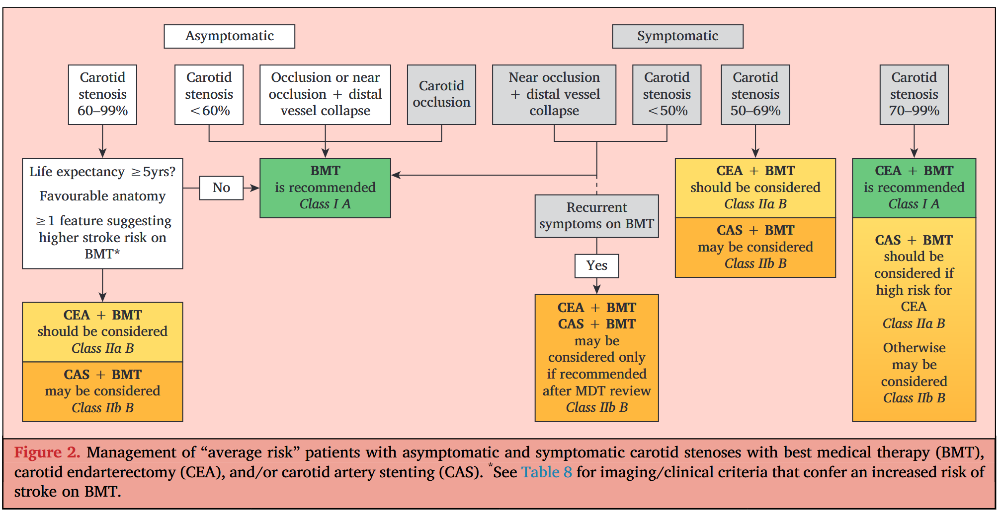

La prevención primaria tiene como objetivo reducir el impacto clínico de la estenosis carotídea asintomática (ACS) y de la arteria vertebral (VA), buscando prevenir el ataque isquémico transitorio (AIT) o el accidente cerebrovascular (ACV). El objetivo de la prevención secundaria es evitar el AIT recurrente, el ACV o los eventos vasculares en pacientes que ya presentan un AIT o ACV isquémico, secundarios a estenosis carotídea o de la arteria vertebral.
El término "accidente cerebrovascular" ha sido reemplazado por AIT o ACV. Dado que muchos estudios previos clasificaron el AIT/ACV basados en el tiempo y no en el tejido, esta guía mantiene las definiciones basadas en el tiempo.
Entre el 15% y el 20% de los ACV son hemorrágicos (intracraneal (ICH), subaracnoideo), mientras que el 20% de los ACV isquémicos son vertebrobasilares (VB). La clasificación TOAST para el AIT/ACV isquémico incluye cinco categorías:
En pacientes con ACV isquémico, la LAA fue responsable del 16.6% de los casos. Se identificó una estenosis carotídea ipsilateral de 50–99% en el 8% de los pacientes. La proporción de ACV por LAA podría estar disminuyendo, asociado a aumentos proporcionales en el ACV cardioembólico, posiblemente debido a la reducción en el colesterol total, LDL-C y presión arterial (PA), y al aumento en las prescripciones de terapia antiplaquetaria (APRx), antihipertensivos y estatinas. Entre 2002 y 2014, hubo una disminución del 30% en la prevalencia de estenosis carotídea de 60–99%.
El European Carotid Surgery Trial (ECST) y el North American Sintomático Carotid Endarterectomy Trial (NASCET) adoptaron métodos distintos para medir la estenosis (Ver Figura 1). Ambos métodos utilizan el diámetro residual del lumen como numerador.
Una estenosis NASCET del 50% equivale a una ECST del 75%, mientras que una estenosis NASCET del 70% equivale a una ECST del 85% (Ver Figura 1). La incertidumbre sobre el método puede llevar a una selección inapropiada de pacientes para intervenciones. El método NASCET ha sido adoptado en las guías actuales, a menos que se indique lo contrario.
El método NASCET tiene limitaciones en la oclusión casi crónica (CNO) con colapso distal del vaso (discutido en la sección 4.12). En los ensayos controlados aleatorios (RCTs), los criterios angiográficos para diferenciar entre CNO y estenosis grave sin colapso distal incluían al menos dos de los siguientes:
Debido a que los angiogramas no se realizan rutinariamente, se han desarrollado criterios de Angiografía por Tomografía Computarizada (CTA) para diferenciar la CNO de una estenosis de 90–95% sin colapso distal del vaso. Estos incluyen:
La Angiografía por Sustracción Digital (DSA) se ha abandonado debido al riesgo de ACV relacionado con el angiograma. El Ultrasonido Dúplex Color (DUS) es la modalidad de imagen de primera línea por su bajo costo y accesibilidad, existiendo criterios de consenso para diagnosticar la gravedad de la estenosis. Alternativas incluyen la CTA o la MRA (Angiografía por Resonancia Magnética) que pueden visualizar simultáneamente el arco aórtico, los troncos supraaórticos, la bifurcación carotídea, la ICA distal y la circulación intracraneal. Una meta-análisis de 41 estudios no aleatorios encontró que el DUS, la MRA y la CTA eran equivalentes en la detección de estenosis significativas. Se aconseja que los centros que dependen del DUS antes de la Endarterectomía Carotídea (CEA) realicen un segundo DUS, preferiblemente por un segundo operador. La combinación de dos modalidades (DUS + CTA o DUS + MRA) mejora la precisión y es práctica rutinaria en muchos centros.
Los pacientes con estenosis carotídea asintomática (ACS) o sintomática (SCS) también se benefician de la imagen funcional CT/MRI. En pacientes asintomáticos, la presencia de infarto silencioso confiere un mayor riesgo de ACV (sección 3.6). En pacientes sintomáticos, el aumento del tamaño del infarto agudo predice mayores riesgos de ACV o hemorragia intracraneal después de la revascularización carotídea (sección 4.7).
| DUS | CTA | CEMRA | |
|---|---|---|---|
| Sensibilidad – % Oclusión | 97 | 97 | 99 |
| Estenosis | 89 | 75–85 | 94–95 |
| Especificidad – % Oclusión | 99 | 99 | 99 |
| Estenosis | 84 | 93–96 | 92–93 |
Tabla 3: Sensibilidad y especificidad del Ultrasonido Dúplex (DUS), la Angiografía por Tomografía Computarizada (CTA) y la Angiografía por Resonancia Magnética con Contraste (CEMRA), comparadas con la Angiografía por Sustracción Digital (DSA) (estándar de oro) en la imagen de la enfermedad de la arteria carótida.
Siempre que sea posible, las decisiones sobre las intervenciones carotídeas deben involucrar a un Equipo Multidisciplinario (MDT), que podría incluir neurólogos o médicos de ACV, cirujanos vasculares y cardiólogos o radiólogos intervencionistas. Este consejo está respaldado por las guías de la ESO y las guías germano-austriacas de 2021. Los MDTs aumentan la proporción de pacientes sometidos a CEA urgente (22% versus 4%). Esperar por las reuniones del MDT no debe introducir retrasos innecesarios; las decisiones urgentes pueden ser tomadas por al menos dos miembros. Los riesgos de procedimiento varían según quién evalúe al paciente. En una revisión sistemática (n = 15 956), la tasa de muerte/ACV a 30 días fue del 7.7% si el evaluador era un neurólogo versus 2.3% cuando el cirujano adjudicaba los resultados.
Una estenosis de la arteria carótida asintomático (ACS) se refiere a una estenosis detectada en pacientes sin historial clínico de ictus isquémico, AIT u otros síntomas neurológicos que puedan ser referibles a las arterias carótidas [1]. Para ser incluidos en el ensayo ACST-1, los pacientes no debían haber reportado ningún síntoma referible a la ACS ipsilateral en los seis meses anteriores [1].
La mayoría de los ensayos controlados aleatorizados (RCTs) de prevención primaria no reclutaron específicamente pacientes ACS, centrándose principalmente en la prevención del ictus en general [2]. Se han resaltado los subanálisis en pacientes asintomáticos [2].
Los pacientes con estenosis carotídea asintomático o sintomático (SCS) requieren consejo sobre estilo de vida respecto a dieta, ejercicio, abandono del tabaquismo y pérdida de peso [2]. La dieta debe ser alta en frutas, verduras, granos integrales, nueces y legumbres; moderada en lácteos bajos en grasa y mariscos; y baja en carnes procesadas, bebidas azucaradas, granos refinados y sodio [2]. El tabaquismo aumentó la prevalencia de ACS mayor o igual a 70% (OR 3.0), la progresión de la placa, y el ictus isquémico (RRI 1.9) [2]. El ejercicio moderado a intenso confirió una Reducción del Riesgo Relativo (RRR) del 25% en el ictus, mientras que la obesidad se asoció con grandes aumentos en el ictus (RRI 1.64) [2]. El asesoramiento conductual para promover dietas saludables y actividad física resultó en una reducción del riesgo de eventos cardiovasculares a 24 meses (RRR 0.80) [2].
Recomendación 8: Para pacientes con enfermedad carotídea asintomático y sintomático, se recomienda el asesoramiento conductual para promover una dieta saludable, el abandono del tabaquismo y la actividad física, I B [3].
Solo un RCT (que no mostró beneficio) y un estudio observacional (que sí mostró beneficio) evaluaron la APRx en pacientes con ACS mayor a 50% bajo TMO (Tabla 4) [3]. Dos tercios de los pacientes asintomáticos tienen CAD subclínica, y el 63% de las muertes son de origen cardíaco [4]. Un metaanálisis de ensayos de prevención primaria reportó que la aspirina confirió una reducción del 12% en eventos vasculares graves [4]. No hay datos de RCTs a gran escala sobre la eficacia de clopidogrel, dipiridamol, ticagrelor o prasugrel en pacientes ACS [4]. Si hay intolerancia a la aspirina, el clopidogrel es una alternativa razonable [4]. Si hay intolerancia o alergia tanto a la aspirina como al clopidogrel, el dipiridamol (200 mg dos veces al día) es una alternativa [4].
| Nombre del Estudio | Severidad de la Estenosis | Método del Estudio | Tiempo de Seguimiento | Hallazgos Principales |
|---|---|---|---|---|
| Asymptomatic Cervical Bruit Study [5] | 50–100% | RCT: 325 mg de aspirina con cubierta entérica diaria (n = 188) vs. placebo (n = 188) | Mediana 2.3 años | No hubo diferencia en el punto final compuesto de AIT, ictus isquémico, angina inestable, IM y muerte por cualquier causa entre los grupos (HR 0.99, IC 95% 0.67–1.46; p = .61) [6] |
| Asymptomatic Carotid Emboli Study [7] | 70–99% | Observacional: APRx (n = 419) vs. sin APRx (n = 58) al inicio | Media 2 años | APRx redujo significativamente el riesgo de ictus o AIT ipsilateral (HR 0.45, IC 95% 0.31–0.66) y cualquier ictus o muerte cardiovascular (HR 0.13, IC 95% 0.06–0.27) vs. sin APRx [6] |
| RCT = ensayo controlado aleatorizado; APRx = terapia antiagregante; TIA = ataque isquémico transitorio; MI = infarto de miocardio; HR = razón de riesgo; CI = intervalo de confianza. | ||||
No hay datos de RCT que respalden el tratamiento a largo plazo con aspirina + clopidogrel o aspirina + dipiridamol en pacientes asintomáticos, a menos que sea por otras indicaciones clínicas [8].
En el ensayo ACE, el riesgo compuesto a 30 días de ictus/IM/muerte fue significativamente menor en pacientes asignados a aspirina en dosis menor (75–325 mg; 3.7%) vs. dosis mayor (mayor a 650 mg; 8.2%) [8, 9]. Si hay intolerancia a la aspirina, es razonable prescribir clopidogrel o dipiridamol en monoterapia [8].
La terapia antiagregante combinada con aspirina + clopidogrel se recomienda de rutina [8]. La combinación se recomienda por mayor a 24 horas [10, 11] a tres días [12, 13] preoperatoriamente, y por dos a cuatro semanas [11, 12] o al menos seis semanas [10, 13] post-procedimiento [8]. La elección de tres días de pretratamiento con clopidogrel se basa en que su efecto antiagregante máximo ocurre después de tres a cinco días de terapia [8, 14].
| Estudio | Severidad de la Estenosis | Método | Terapia Antitrombótica | Hallazgos Principales |
|---|---|---|---|---|
| Dalainas [16] | 70–99% | RCT (n = 100; 88 con ACS) | 325 mg de aspirina diarios por 7 días pre-CAS + 24 horas de heparina i.v. post-op, luego 325 mg de aspirina diarios vs. 325 mg de aspirina diarios + 250 mg de ticlopidina dos veces al día por 7 días pre-CAS y 30 días post-CAS, luego 325 mg de aspirina diarios | Aspirina + heparina asociada con aumento significativo en ictus/AIT isquémico ipsilateral (16%) vs. 2% (p menor a .05). Sin diferencia en complicaciones hemorrágicas (4 vs. 2%; p mayor a .05) |
| McKevitt [17] | 70–99% | RCT (n = 47; 9 con ACS) | 75 mg de aspirina diarios + 24 horas de heparina i.v. (ratio APTT 1.5–2.5) vs. 75 mg de aspirina diarios + clopidogrel (300 mg stat 6–12 horas pre-op, 75 mg 2 horas pre-op + 75 mg diarios por días 1–28) | Aspirina + heparina asociada con aumento significativo en amaurosis fugax, AIT, cualquier ictus ipsilateral a 30 días (25 vs. 0%, p = .02). Sin diferencia en incidencia de hematoma inguinal (17 vs. 9%; p = .35) |
| ACS = estenosis carotídea asintomático; TIA = ataque isquémico transitorio; APTT = tiempo de coagulación de tromboplastina parcial activada. | ||||
El ensayo COMPASS reportó una reducción del punto final compuesto (ictus, IM o muerte cardiovascular) con rivaroxabán a dosis baja (2.5 mg dos veces al día) más 100 mg de aspirina diarios (HR 0.76), aunque con un aumento de las complicaciones de sangrado mayor (HR 1.7) [15]. En el subgrupo de enfermedad carotídea (n = 1 919), la reducción del punto final compuesto no fue estadísticamente significativa (HR 0.63, p = .07) [18]. No se recomienda rivaroxabán a dosis baja más aspirina como tratamiento antitrombótico de rutina en pacientes ACS bien fenotipados [18].
Recomendación 9: Para pacientes con estenosis carotídea asintomático mayor a 50%, se debe considerar la aspirina en dosis menor (75–325 mg diarios), principalmente para la prevención de IM tardío y otros eventos cardiovasculares, IIa C [19].
Recomendación 10: Para pacientes con estenosis carotídea asintomático mayor a 50% que son intolerantes o alérgicos a la aspirina, se debe considerar clopidogrel 75 mg diarios. Si son intolerantes o alérgicos a la aspirina y al clopidogrel, se debe considerar la monoterapia con dipiridamol (200 mg dos veces al día), IIa C [20, 21].
Recomendación 11: Para pacientes con estenosis carotídea asintomático que se someten a endarterectomía carotídea, se recomienda aspirina en dosis menor (75–325 mg diarios) en lugar de dosis mayor (mayor a 325 mg diarios), I B [21, 22].
Recomendación 12: Para pacientes con estenosis carotídea asintomático sometidos a stenting carotídeo, se recomienda terapia antiagregante combinada con aspirina (75–325 mg diarios) y clopidogrel (75 mg diarios). Clopidogrel (75 mg diarios) debe iniciarse al menos tres días antes del stenting o como una dosis de carga única de 300 mg en casos urgentes. La aspirina y el clopidogrel deben continuarse por al menos cuatro semanas después del stenting y luego la monoterapia antiagregante debe continuarse indefinidamente, I B [23].
No se han evaluado RCTs de terapia hipolipemiante específicamente en pacientes ACS [23]. Un análisis post hoc de ACST-1 reportó tasas más bajas de ictus no perioperatorio en pacientes que tomaban estatinas [23, 24]. Se recomiendan estatinas (con o sin ezetimiba) para la prevención a largo plazo de eventos cardiovasculares [23, 25]. En pacientes asintomáticos con dislipidemia que son intolerantes a las estatinas o ezetimiba, es razonable considerar los inhibidores de PCSK9 [23, 26].
Recomendación 13: Para pacientes con estenosis carotídea asintomático, se recomienda la terapia hipolipemiante con estatinas (con o sin ezetimiba) para la prevención a largo plazo de ictus, infarto de miocardio y otros eventos cardiovasculares, I B [27].
Recomendación 14: Para pacientes con estenosis carotídea asintomático con dislipidemia que son intolerantes a las estatinas, con o sin ezetimiba, se debe considerar la terapia hipolipemiante con inhibidores de PCSK9, IIa C [20, 28].
La hipertensión aumenta la probabilidad de desarrollar ACS, y el tratamiento reduce la progresión de la estenosis (14% vs. 31%; p = .02) [28, 29]. El GWC aconseja la adopción de las recomendaciones ESC-ESH [28]: el objetivo de PA es menor a 130/80 mmHg en no diabéticos menores a 65 años, y menor a 140/80 mmHg en no diabéticos mayor o igual a 65 años [28, 30]. En pacientes diabéticos, el objetivo de PAS es 120–129 mmHg y PAD 70–79 mmHg en menores a 65 años, y PAS 130–139 mmHg y PAD 70–79 mmHg en mayores a 65 años [28, 30].
Recomendación 15: Para pacientes con estenosis carotídea asintomático o sintomático e hipertensión, se recomienda el tratamiento antihipertensivo, I A [31].
Los pacientes con DM tienen más probabilidades de desarrollar ictus [31]. La DM se asocia con una mayor prevalencia de ACS [31, 32]. El control glucémico óptimo es importante [31].
Recomendación 16: Para pacientes diabéticos con estenosis carotídea asintomático, se recomienda un control glucémico óptimo, I B [33].
La adherencia plena a los medicamentos en pacientes ACS se reduce con el deterioro cognitivo, la falta de comprensión de su enfermedad o la falta de creencia en los beneficios [33, 34]. La supervivencia fue significativamente mayor en los pacientes que se mantuvieron cumplidores con el TMO [33, 35].
Un modelo identificó predictores de ACS mayor a 50% y mayor a 70%: aumento de la edad, sexo masculino, tabaquismo, DM, ictus/AIT previo, CAD, PAD, PA alta y lípidos elevados [36].
| Edad – años | Estenosis – % | Prevalencia de Estenosis – % | |
|---|---|---|---|
| Hombres | Mujeres | ||
| menor a 50 | mayor a 50 | 0.2 | 0.0 |
| menor a 50 | mayor a 70 | 0.1 | 0.0 |
| 50–59 | mayor a 50 | 0.7 | 0.5 |
| 50–59 | mayor a 70 | 0.2 | 0.1 |
| 60–69 | mayor a 50 | 2.3 | 2.0 |
| 60–69 | mayor a 70 | 0.8 | 0.2 |
| 70–79 | mayor a 50 | 6.0 | 3.6 |
| 70–79 | mayor a 70 | 2.1 | 1.0 |
| mayor o igual a 80 | mayor a 50 | 7.5 | 5.0 |
| mayor o igual a 80 | mayor a 70 | 3.1 | 0.9 |
Todas las guías publicadas desaconsejan el cribado rutinario [37, 38]. El cribado selectivo se recomienda en pacientes con múltiples factores de riesgo, siempre que estén dispuestos a considerar CEA o CAS si se encuentra una estenosis sustancial [37]. El objetivo principal del cribado selectivo es reducir la morbilidad y mortalidad cardiovascular tardía, en lugar de identificar candidatos para intervenciones carotídeas [39].
Recomendación 17: No se recomienda el cribado poblacional rutinario para la estenosis carotídea asintomático, III C [40].
Recomendación 18: Para pacientes con dos o más factores de riesgo vascular, se puede considerar el cribado selectivo de estenosis carotídea asintomático con el fin de optimizar el control de los factores de riesgo y el tratamiento médico. El objetivo principal es reducir la morbilidad y mortalidad cardiovascular tardía, en lugar de identificar candidatos para intervenciones carotídeas, IIb B [39].
VACS, ACAS y ACST-1 compararon CEA más TMO vs. TMO sola en 5 526 pacientes asintomáticos [39].
| RCT (Tiempo de seguimiento) | D/I a 30 d después de CEA – % | Ictus ipsilateral incluyendo D/I perioperatorio* | Cualquier ictus incluyendo D/I perioperatorio* | ||||||
|---|---|---|---|---|---|---|---|---|---|
| CEA – % | TMO – % | ARR – % | NNT Ictus /1 000 | CEA – % | TMO – % | ARR – % | NNT Ictus /1 000 | ||
| VACS (4 años) [42] | 4.6 | 7.0 | 9.4 | 2.4 | 42 (24 a 5 a) | 10.4 | 12.0 | 1.6 | 63 (16 a 4 a) |
| ACAS (5 años) [43] | 2.3 | 5.1 | 11.0 | 5.9 | 17 (59 a 5 a) | 12.4 | 17.8 | 5.4 | 19 (53 a 5 a) |
| ACST (5 años) [44] | 2.8 | No hay datos publicados | 6.4 | 11.8 | 5.4 | 19 (53 a 5 a) | |||
| ACST (10 años) [24] | 2.8 | No hay datos publicados | 13.4 | 17.9 | 4.5 | 22 (45 a 10 a) | |||
| RCT = ensayo controlado aleatorizado; D/I = muerte/ictus; ARR = reducción absoluta del riesgo; NNT = número necesario para tratar para prevenir un ictus; ictus / 1 000 = número de ictus prevenidos por 1 000 CEA. * Incluye ictus ocurridos después de la angiografía diagnóstica. | |||||||||
Excluyendo riesgos perioperatorios, CEA en pacientes menores a 65 años tuvo un riesgo de cualquier ictus a cinco años de 1.8% vs. 9.6% con TMO (ARR 7.8%) [45]. Para mayores a 75 años, el riesgo de ictus a cinco años fue 5.5% vs. 8.8% con TMO (ARR 3.3%) [45]. Una vez incluidos los riesgos perioperatorios (3.7%), no hubo evidencia de beneficio de CEA en mayores a 75 años [44, 45].
ACST-1 y ACAS reportaron que el aumento de la severidad de la estenosis no se asoció con mayores tasas de ictus en pacientes con TMO [24, 43, 46]. Metaanálisis posteriores informaron que los ictus ipsilaterales estaban altamente correlacionados con el aumento de la severidad solo en estudios de cohorte (no RCTs) [46, 47]. La incidencia de ictus ipsilateral fue mayor con ACS más al menos una Característica de Alto Riesgo (HRF) vs. sin HRFs (OR 2.0) [48].
Las guías ESO de 2021 aconsejan que se recomiende CEA en pacientes con ACS mayor o igual a 60% considerados con mayor riesgo de ictus bajo TMO [49, 50]. Los criterios de ACS de "mayor riesgo de ictus bajo TMO" (HRF) incluyen (Tabla 8) [49, 51, 52]:
| Característica | Severidad Estenosis (%) | Método de Estudio (Tipo) | Riesgo Anual de Ictus/AIT Ipsilateral – % (Rango) | Razones de Probabilidad/Riesgo (IC 95%) |
|---|---|---|---|---|
| Infarto silente en CT/MRI (Sí vs. No) [53] | 60–99 | Multicentro, obs. | Sí: 3.6% vs. No: 1.0% | OR 3.0 (1.46–6.29); p = .002 |
| Progresión mayor o igual a 20% de estenosis (Sí vs. No) [54, 55] | 50–99 | Multicentro, obs./RCT | Progresión 1 grado: 1.6% (1.1–2.4); Progresión 2 grados: 4.7% (2.3–9.6) | Prog. 1 grado: OR 2.3 (1.4–3.8); Prog. 2 grados: OR 6.9 (3.0–15.8) |
| Área de Placa en análisis computarizado (mm2) [56] | 70–99 | Multicentro, obs. | menor a 40 mm2: 1.0%; 40–80 mm2: 1.4%; mayor a 80 mm2: 4.6% | menor a 40 mm2: comparador; 40–80 mm2: 2.08 (1.05–4.12); mayor a 80 mm2: 5.81 (2.67–12.67) |
| JBA en análisis computarizado (mm2) [57] | 50–99 | Multicentro, obs. | menor a 4 mm2: 0.4%; 4–8 mm2: 1.4%; 8–10 mm2: 3.2%; mayor a 10 mm2: 5.0% | Tendencia, p menor a .001 |
| Hemorragia Intraplaca (IPH) en MRI (Sí vs. No) [58] | 50–99 | Metaanálisis | Sí vs. No: OR 3.66 (2.77–4.95); p menor a .01 | OR 3.66 (2.77–4.95); p menor a .01 |
| CVR Deteriorada (Sí vs. No) [59] | 70–99 | Metaanálisis | Sí vs. No: OR 6.14 (1.27–29.5); p = .02 | OR 6.14 (1.27–29.5); p = .02 |
| Lucidez de Placa en DUS (Ecolúcido vs. Ecogénico) [60] | 50–99 | Metaanálisis | Predominantemente ecolúcido: 4.2%; Predominantemente ecogénico: 1.6% | Ecolúcido vs. ecogénico: OR 2.61 (1.47–4.63); p = .001 |
| mayor o igual a 1 MES espontánea durante mayor o igual a 1 h TCD (Sí vs. No) [61] | 50–99 | Metaanálisis | Sí vs. No: OR 7.46 (2.24–24.89); p = .001 | OR 7.46 (2.24–24.89); p = .001 |
| Embolización espontánea más placa uniformemente o predominantemente ecolúcida (Sí vs. No) [62] | 70–99 | Multicentro, obs. | Sí: 8.9% vs. No: 0.8% | OR 10.61 (2.98–37.82); p menor a .001 |
| AIT/Ictus Contralateral (Sí vs. No) [63] | 50–99 | Multicentro, obs. | Sí: 3.4% vs. No: 1.2% | OR 3.0 (1.9–4.73); p menor a .001 |
| OR/HR = razón de probabilidad/riesgo; CI = intervalo de confianza; DUS = ecografía dúplex; TCD = Doppler transcraneal; obs. = observacional. | ||||
El GWC decidió (por voto de 11:3) no incluir la estenosis asintomático del 80–99% como un criterio de "alto riesgo de ictus bajo TMO" [64].
| Muerte | Ictus | Muerte / Ictus | Ictus Incapacitante | Muerte / Ictus Incapacitante | IM | Muerte / Ictus / IM | |
|---|---|---|---|---|---|---|---|
| RCTs / pacientes – n | 3 / 5 313 | 6 / 7 030 | 6 / 7 030 | 3 / 6 257 | 2 / 5 076 | 3 / 6 257 | 4 / 6 393 |
| CAS – n (%) | 5 / 3 017 (0.16) | 119 / 3 876 (3.07) | 123 / 3 876 (3.17) | 21 / 3 494 (0.60) | 21 / 2 900 (0.72) | 17 / 3 494 (0.49) | 125 / 3 562 (3.5) |
| CEA – n (%) | 8 / 2 298 (0.35) | 63 / 3 156 (2.00) | 71 / 3 156 (2.24) | 15 / 2 765 (0.54) | 20 / 2 178 (0.92) | 28 / 2 765 (1.01) | 86 / 2 833 (3.03) |
| OR (IC 95%) | 0.53 (0.17–1.65) | 1.61 (1.18–2.21) | 1.47 (1.09–1.99) | 1.19 (0.61–2.35) | 0.86 (0.46–1.61) | 0.49 (0.26–0.90) | 1.19 (0.89–1.59) |
| valor p | .27 | .003 | .011 | .61 | .63 | .024 | .27 |
| * La sombra roja (aplicada mediante CSS) indica un beneficio significativo a favor de CEA; la sombra verde (aplicada mediante CSS) indica un beneficio significativo a favor de CAS. MI = infarto de miocardio; OR = razón de probabilidad; CI = intervalo de confianza. | |||||||
| Muerte | Ictus | Muerte / Ictus | Ictus Incapacitante | Muerte / Ictus Incapacitante | IM | Muerte / Ictus / IM | |
|---|---|---|---|---|---|---|---|
| RCTs / pacientes – n | 2 / 5 078 | 4 / 6 659 | 4 / 6 659 | 3 / 6 259 | 2 / 5 078 | 3 / 6 259 | 3 / 6 259 |
| CAS – n (%) | 3 / 2 900 (0.10) | 111 / 3 691 (3.00) | 114 / 3 691 (3.08) | 21 / 3 494 (0.60) | 21 / 2 900 (0.72) | 17 / 3 494 (0.49) | 123 / 3 494 (3.52) |
| CEA – n (%) | 7 / 2 178 (0.32) | 58 / 2 968 (1.95) | 65 / 2 968 (2.19) | 15 / 2 765 (0.54) | 20 / 2 178 (0.92) | 28 / 2 765 (1.01) | 85 / 2 765 (3.07) |
| OR (IC 95%) | 0.33 (0.08–1.34) | 1.61 (1.16–2.23) | 1.47 (1.07–2.01) | 1.19 (0.61–2.36) | 0.86 (0.42–1.66) | 0.49 (0.26–0.91) | 1.18 (0.89–1.58) |
| valor p | .12 | .005 | .017 | .60 | .63 | .023 | .25 |
| * La sombra roja (aplicada mediante CSS) indica un resultado estadísticamente significativo a favor de CEA; la sombra verde (aplicada mediante CSS) indica un beneficio significativo a favor de CAS. MI = infarto de miocardio; OR = razón de probabilidad; CI = intervalo de confianza. | |||||||
| Estudio | Seguimiento | Ictus ipsilateral CEA – % (tasa anual) | Ictus ipsilateral CAS – % (tasa anual) | Cualquier ictus CEA – % (tasa anual) | Cualquier ictus CAS – % (tasa anual) |
|---|---|---|---|---|---|
| CREST-1 [67, 68] | 5 años | 2.5 (0.50) | 2.7 (0.54) | 7.1 (1.42) | 6.8 (1.36) |
| CREST-1 [67, 68] | 10 años | 6.9 (0.69) | 5.6 (0.56) | 13.4 (1.34) | 12.5 (1.25) |
| ACST-2 [69] | 5 años | 2.1 (0.42) | 1.0 (0.20) | 5.2 (1.04) | 4.5 (0.90) |
Un algoritmo para manejar pacientes ACS y sintomáticos de riesgo promedio se presenta en la Figura 2. 
El GWC decidió mantener el umbral del 3% de muerte/ictus a 30 días para la intervención [70].
Recomendación 19: Para pacientes con riesgo quirúrgico promedio con una estenosis asintomático 60–99%, se debe considerar la endarterectomía carotídea en presencia de una o más características clínicas o de imagen que puedan estar asociadas con un mayor riesgo de ictus tardío* (Tabla 8), siempre que la tasa de ictus/muerte a 30 días sea menor o igual a 3% y la esperanza de vida del paciente exceda los cinco años, IIa B [71].
Recomendación 20: Para pacientes con riesgo quirúrgico promedio con una estenosis asintomático 60–99% en presencia de una o más características clínicas o de imagen que puedan estar asociadas con un mayor riesgo de ictus tardío* (Tabla 8), el stenting carotídeo puede considerarse una alternativa a la endarterectomía carotídea, siempre que la tasa de ictus/muerte a 30 días sea menor o igual a 3% y la esperanza de vida del paciente exceda los cinco años, IIb B [72].
Recomendación 21: Para pacientes asintomáticos considerados por el equipo multidisciplinario (MDT) como de ‘alto riesgo para cirugía’ y que tienen una estenosis asintomático 60–99% en presencia de una o más características de imagen/clínicas que puedan estar asociadas con un mayor riesgo de ictus tardío bajo la mejor terapia médica* (Tabla 8), se puede considerar el stenting carotídeo siempre que la anatomía sea favorable, la tasa de muerte/ictus a 30 días sea menor o igual a 3% y la esperanza de vida del paciente exceda los cinco años, IIb B [73].
Existe especulación de que la ACS puede ser responsable del declive cognitivo [74]. Una revisión sistemática encontró asociaciones significativas entre ACS y deterioro cognitivo [19, 71], pero sin evidencia clara de una relación causal [75]. Los pacientes con Reserva Vascular Cerebral (CVR) deteriorada pueden sufrir un declive en el flujo sanguíneo [74]. No hay evidencia convincente de que CEA o CAS mejoren o prevengan el deterioro cognitivo [75].
| Resultado | Efecto Temprano (menor a 6 meses) | Efecto Tardío (mayor o igual a 6 meses) | ||
|---|---|---|---|---|
| Estudios / n | Pacientes – n (%) | Estudios / n | Pacientes – n (%) | |
| Deterioro en todos los dominios / pruebas | 1 / 14 | 28 / 2 059 (1.4) | 1 / 21 | 28 / 1 554 (1.8) |
| Mayoría sin cambios, uno o dos significativamente peores | 2 / 24 | 347 / 2 059 (16.8) | 1 / 21 | 24 / 1 554 (1.5) |
| Sin cambios en la mayoría de los dominios / pruebas | 9 / 24 | 1 086 / 2 059 (52.7) | 6 / 21 | 1 073 / 1 554 (69.0) |
| Mayoría sin cambios, uno o dos significativamente mejores | 7 / 24 | 250 / 2 059 (12.1) | 11 / 21 | 386 / 1 554 (24.8) |
| Todos los dominios / pruebas significativamente mejores | 2 / 24 | 91 / 2 059 (4.4) | 1 / 21 | 24 / 1 554 (1.5) |
| * Datos presentados como n o n (%). Los resultados originales del metaanálisis se han adaptado para reflejar las categorías presentadas en la fuente [74]. | ||||
Pocos pacientes tuvieron una mejora sustancial en la función cognitiva tardía [76].
Recomendación 22: Para pacientes con una estenosis carotídea asintomático del 70–99%, no se recomiendan las intervenciones carotídeas para la prevención del deterioro cognitivo hasta que se haya establecido una asociación causal entre las estenosis carotídeas asintomático graves y el declive cognitivo, III B [65, 77].
Resumen y traducción del Apartado 4 de las Guías de Práctica Clínica de la Sociedad Europea de Cirugía Vascular (ESVS) 2023 sobre el Manejo de la Enfermedad Aterosclerótica de la Arteria Carótida y Vertebral. Este apartado se centra en pacientes sintomáticos [1-3].
El término “síntomas no hemisféricos” se aplica a pacientes con síncope aislado, presíncope (sensación de desmayo), mareo aislado, diplopía (visión doble) aislada, tinnitus o vértigo aislado [4]. No existe evidencia de que los pacientes con síntomas no hemisféricos se beneficien de intervenciones carotídeas (o vertebrales), a menos que coexistan con los síntomas focales detallados en la Tabla 13 [4].
| Síntomas del Territorio Carotídeo | Síntomas del Territorio Vertebrobasilar |
|---|---|
| Disfunción cortical superior (afasia, disgrafia, apraxia, problemas visuoespaciales, déficits del campo visual) [5] | Pérdida visual completa, visión borrosa, hemianopsia [5] |
| Amaurosis fugax / Ceguera monocular transitoria, visión borrosa [5] | Diplopía, ptosis [5] |
| Síndrome de isquemia ocular crónica [5] | Vértigo; generalmente con otros síntomas del tronco encefálico [5] |
| Debilidad y/o deterioro sensorial de la cara/brazo/pierna (una o todas las áreas pueden estar afectadas) [5] | Pérdida aguda de audición neurosensorial [5] |
| Torpeza de las extremidades superiores/inferiores [5] | Disartria (también ocurre con isquemia del territorio carotídeo) [5] |
| “AIT de sacudida de extremidades” (eventos hemodinámicos en pacientes con estenosis carotídea sintomática grave y reserva vascular cerebral (CVR) agotada) [4] | Disfagia (también ocurre con isquemia del territorio carotídeo) [4] |
| Disfonía [4] | |
| Debilidad/entumecimiento facial o de extremidades bilateral [4] | |
| Ataxia [4] |
La mayoría de los ensayos controlados aleatorizados (ECA) de prevención secundaria (terapia antiplaquetaria [APRx], hipertensión, reducción de lípidos, diabetes mellitus [DM]) no reclutaron específicamente pacientes con estenosis carotídea sintomática (SCS), centrándose principalmente en la prevención del ictus en general [6].
El manejo de los factores de riesgo y el estilo de vida es el mismo que para los pacientes asintomáticos (Sección 3.1.1) [6].
Los ECA más antiguos sugieren que la monoterapia con aspirina debe iniciarse urgentemente en pacientes con AIT/ictus isquémico APRx I para reducir el ictus isquémico recurrente, la muerte o la dependencia [6, 8, 9]. Si se adopta la monoterapia, se puede prescribir 300 mg de aspirina durante los días 1 a 14, seguido de 75–325 mg diarios [6, 10, 11].
Existe un interés creciente en el papel de la terapia antiplaquetaria dual (DAPT) sobre la monoterapia para optimizar la protección contra eventos vasculares recurrentes en pacientes con AIT o ictus isquémico, incluidos aquellos con SCS [12].
La combinación de aspirina más dipiridamol es más efectiva que la monoterapia con aspirina para prevenir el ictus recurrente [13] o los eventos vasculares isquémicos recurrentes en pacientes con AIT o ictus isquémico [14] y puede iniciarse de forma segura en menos de 24 horas después del inicio de los síntomas [12, 15].
| ECA | Pacientes (% con SCS) – n | Cohorte | Estrategia Antiplaquetaria Combinada | Hallazgos Principales |
|---|---|---|---|---|
| ESPS-2 [13, 16] | 6 602 (no claro) | AIT / ictus isquémico menor de 3 meses | Dipiridamol 200 mg dos veces al día vs. aspirina 25 mg dos veces al día vs. aspirina 25 mg más dipiridamol 200 mg dos veces al día vs. placebo | Reducción Relativa del Riesgo (RRR) de ictus a 2 años: Dipiridamol vs. placebo: 16%, p menor de .050; Aspirina vs. placebo: 18%, p menor de .050; Aspirina y dipiridamol vs. placebo: 37%, p menor de .050; Aspirina y dipiridamol vs. dipiridamol: 25%, p menor de .050; Aspirina y dipiridamol vs. aspirina: 23%, p menor de .050 [13] |
| ESPRIT* [14, 17] | 2 739 (9–11% con más de 50% SCS) | AIT / ictus isquémico menor de 6 meses | Aspirina 30–325 mg diarios vs. aspirina 30–325 mg diarios más dipiridamol 200 mg dos veces al día | Ictus no fatal / IM / sangrado mayor / muerte vascular a 3 años: Aspirina y dipiridamol vs. aspirina (HR 0.80, 95% CI 0.66–0.98); Ictus no fatal o IM / muerte vascular a 3 años: Aspirina y dipiridamol vs. aspirina (HR 0.78, 95% CI 0.63–0.97) [14] |
| EARLY [14, 15, 18] | 543 (no claro) | Ictus isquémico menor de 24 h, NIHSS menor o igual 20, no para trombólisis | Aspirina 25 mg más dipiridamol 200 mg MR dos veces al día días 1–90 (“Temprano”) vs. aspirina 100 mg diarios días 1–7, luego aspirina 25 mg más dipiridamol 200 mg MR dos veces al día días 8–90 (“Tardío”) | Buen resultado funcional (mRS 0–1) a 90 días: Temprano vs. Tardío (56.4 vs. 52.4%, p = .45). Ictus no fatal / AIT / IM no fatal / complicación de sangrado mayor no fatal / muerte vascular: Temprano vs. Tardío: 10 vs. 15% (HR 0.73, 95% CI 0.44–1.19; p = .20) [18] |
Los estudios también sugieren que la terapia dual con aspirina y clopidogrel reduce la microembolización espontánea en pacientes sintomáticos (SCS) [19, 20].
| Autor o Ensayo | Tipo de Estudio, Pacientes – n | Cohorte | Estrategia Antiplaquetaria Combinada | Hallazgos Principales |
|---|---|---|---|---|
| Payne [21, 22] | ECA, 100 | mayor o igual 50% SCS o mayor o igual 70% ACS | Aspirina 150 mg diaria por 4 sem pre-op más placebo vs. aspirina 150 mg diaria por 4 sem pre-op más dosis única de 75 mg de clopidogrel 12 h pre-op | Durante 3 h de monitoreo TCD post-op, aspirina más clopidogrel se asoció con una reducción diez veces mayor en la proporción de pacientes con mayor o igual 20 émbolos detectados: (OR 0.1, 95% CI 0.01–0.80; p = .010) [21] |
| CARESS [20, 21] | ECA, 107 | más de 50% SCS + mayor o igual 1 MES en TCD al inicio | Aspirina 75 mg diaria más clopidogrel 300 mg el día 1, seguido de 75 mg clopidogrel diario hasta el día 7 vs. aspirina 75 mg diaria | A los 7 días, aspirina más clopidogrel se asoció con una reducción significativa en la proporción de pacientes con embolización persistente en TCD: (43.8 vs. 72.7%; RRR 39.8%, 95% CI 13.8–58; p = .005) [21] |
| AMBDAP [21, 23] | ECA, 60 | 50% SCS | Aspirina 300 mg, luego 75 mg diarios más dipiridamol 200 mg dos veces al día por 30 días vs. aspirina 300 mg, luego 75 mg diarios más clopidogrel 300 mg, luego 75 mg diarios por 30 días | A las 48 h, hubo una reducción similar en la frecuencia de microembolización para: Aspirina más dipiridamol (75.5%); Aspirina más clopidogrel (77.5%, p = .77) [21] |
| Batchelder [24, 25] | Obs., 100 | Pacientes SCS sometidos a CEA menor de 8 días del inicio del síntoma | Aspirina 300 mg, luego 75 mg diarios más 75 mg clopidogrel 12 h pre-op vs. aspirina 300 mg, luego 75 mg diarios más 75 mg clopidogrel diario por 48–72 h pre-op | Comenzar aspirina más clopidogrel 48–72 h pre-op se asoció con reducciones significativas en: AIT/ictus recurrente antes de CEA (3% vs. 13%) (OR 0.20, 95% CI 0.06–0.66; p = .010) y Embolización espontánea pre-op (5% vs. 21%) (OR 0.2, 95% CI 0.09–0.66; p = .005) [24] |
Una metaanálisis de ECA (CHANCE [26, 27], POINT [26, 28], THALES [3, 29, 30]) mostró que iniciar aspirina más clopidogrel dentro de las 24 horas posteriores al inicio de un AIT de alto riesgo o ictus menor reduce el ictus isquémico o hemorrágico recurrente no fatal a 90 días, la discapacidad funcional moderada a grave y la mala calidad de vida [31, 32]. Limitar la DAPT a 21 días después del inicio de los síntomas podría reducir el ictus recurrente temprano y minimizar las complicaciones hemorrágicas mayores [31, 32].
| ECA | Pacientes – n | Criterios de Inclusión/Momento de Inicio | Estrategia Antiplaquetaria Combinada | Hallazgos Principales |
|---|---|---|---|---|
| CHANCE [26, 27, 33] | 5 170 | Ictus isquémico menor o AIT de alto riesgo, con inicio de APRx menor o igual 24 h del inicio del síntoma | Aspirina 75–300 mg diaria por 90 días más clopidogrel 300 mg stat y luego 75 mg diaria días 2–21 vs. aspirina 75–300 mg diaria por 90 días | Reducciones significativas a 90 días: Ictus (8.2 vs. 11.7%; HR 0.68, 95% CI 0.57–0.81; p menor de .001); Ictus fatal/discapacitante (5.2 vs. 6.8%; HR 0.75, 95% CI 0.6–0.94; p = .010); Ictus isquémico (7.9 vs. 11.4%; HR 0.67, 95% CI 0.56–0.81; p menor de .001). No hubo diferencia significativa en sangrado moderado o grave (0.3 vs. 0.3%; p = .73) [26] |
| POINT§ [26, 28] | 4 881 | Ictus isquémico menor agudo o AIT de “alto riesgo”, con inicio de APRx menor de 12 h del inicio del síntoma‡ | Aspirina 50–325 mg/d más clopidogrel 600 mg stat más clopidogrel 75 mg/d días 2–90 vs. aspirina 50–325 mg/d × 90 días (se recomendó 162 mg aspirina/d por 5 días y luego 81 mg/d) | Reducciones significativas a 90 días: Ictus / IM / muerte vascular isquémica (5 vs. 6.5%; HR 0.75, 95% CI 0.59–0.95; p = .020); Ictus isquémico (4.6 vs. 6.3%; HR 0.72, 95% CI 0.56–0.92; p = .010). Aumento significativo en sangrado mayor (0.9 vs. 0.4%; HR 2.32, 95% CI 1.10–4.87; p = .020) [30] |
| THALES [3, 29, 30, 34] | 11 016 | Ictus isquémico menor agudo o AIT de “alto riesgo”, con inicio de APRx menor de 24 h del inicio del síntoma‖ | Aspirina 300–325 mg stat y luego 75–100 mg aspirina días 2–30 más ticagrelor 180 mg stat + ticagrelor 90 mg dos veces al día días 2–30 vs. aspirina 300–325 mg stat y 75–100 mg aspirina diaria días 2–30 | Reducciones significativas a 30 días: Ictus / muerte (5.5 vs. 6.6%; HR 0.83, 95% CI 0.71–0.96; p = .020); Ictus isquémico (5.0 vs. 6.3%; HR 0.79, 95% CI 0.68–0.93; p = .004). Aumento significativo en sangrado grave (0.5 vs. 0.1%; HR 3.9, 95% CI 1.74–9.14; p = .001) [34] |
Para pacientes sintomáticos recientes que van a someterse a CEA, se recomienda la monoterapia con aspirina perioperatoria [47]. Si se prefiere DAPT, el riesgo de hematoma cervical debe sopesarse frente a la prevención del ictus embólico recurrente [47].
Figura 3: Momento, dosis y duración de la **terapia antiplaquetaria combinada** en la fase temprana después del inicio del Ataque Isquémico Transitorio (AIT) o ictus isquémico menor en pacientes con estenosis carotídea sintomática con o sin tratamiento planificado mediante Endarterectomía Carotídea (EC) o Stent Carotídeo (CAS). MR = liberación modificada; OD = una vez al día; BD = dos veces al día [4].
La Figura 3 ilustra el régimen de DAPT en la fase temprana después del inicio de los síntomas en pacientes con estenosis carotídea sintomática [4].
Los pacientes con SCS del 50–99% sometidos a CAS reciben de forma rutinaria terapia antiplaquetaria combinada (DAPT) [48]. Se prefiere aspirina más clopidogrel; se debe continuar durante al menos cuatro semanas, después de lo cual los pacientes deben volver a la monoterapia (preferiblemente clopidogrel) [48-50].
Para pacientes con terapia antiplaquetaria que tienen un riesgo superior al promedio de sangrado gastrointestinal, se debe considerar el tratamiento gastroprotector o la inhibición de la bomba de protones [1]. Si se indica un inhibidor de la bomba de protones, se recomienda seleccionar uno que no influya significativamente en los efectos antiplaquetarios del clopidogrel (por ejemplo, pantoprazol) [1].
Clase: IIa Nivel: BLa DAPT puede prescribirse sin inhibidores de la bomba de protones (IBP) en ausencia de factores de riesgo [56]. Si se indica un IBP (por alto riesgo de sangrado gastrointestinal, edad mayor de 65 años, etc.), se recomienda seleccionar uno que no interactúe con el clopidogrel (por ejemplo, pantoprazol) [56-58].
No se recomienda actualmente la combinación de rivaroxabán en dosis baja más aspirina en pacientes SCS [97, 1–4].
La HTPR en pacientes con SCS es variable (entre 9% y 64% para aspirina) [59, 60]. Aunque un metaanálisis sugiere que la HTPR se asocia con un mayor riesgo de eventos vasculares recurrentes (OR 2.93) [19], no hay estudios con suficiente poder para determinar si este estado predice riesgos de eventos isquémicos o hemorrágicos en pacientes asintomáticos o sintomáticos en el período perioperatorio o no perioperatorio [59, 60].
La gestión de pacientes anticoagulados que se someten a intervenciones carotídeas busca minimizar las complicaciones tromboembólicas y hemorrágicas perioperatorias [60].
Debido a que la CEA es un procedimiento de alto riesgo de sangrado, los anticoagulantes deben suspenderse de forma rutinaria y por períodos más largos (Figura 4) [61]. Se debe prescribir aspirina 300 mg diarios según se indica en la Figura 4 [61].
Figura 4: Interrupción y reinicio de la anticoagulación antes de la Endarterectomía Carotídea (EC) [1]. Los cuadros azules representan los días para tomar anticoagulantes; los cuadros rojos representan los días para tomar 300 mg de aspirina diarios [2]. Si hay intolerancia o alergia a la aspirina, el clopidogrel 75 mg diarios o el dipiridamol de liberación modificada 200 mg dos veces al día son alternativas [2].
Figura 5: Estrategias de anticoagulación, antiplaquetaria y puenteo en pacientes sometidos a Endarterectomía Carotídea (EC). Los VKA y DOAC deben suspenderse según los tiempos de la Figura 4 [3]. Si se considera el puenteo preoperatorio, esta decisión debe involucrar la discusión del equipo multidisciplinario (MDT), y los beneficios y riesgos del puenteo deben explicarse claramente y documentarse [3].
La mayoría de los procedimientos CAS se realizaban históricamente con anticoagulación suspendida preoperatoriamente [62]. Sin embargo, estudios observacionales sugieren que el CAS puede realizarse de forma segura mientras el paciente toma anticoagulantes más terapia antiplaquetaria, especialmente si se utilizan vainas más pequeñas y punciones guiadas por ultrasonido [63]. El algoritmo pragmático (Figura 6) sugiere monoterapia antiplaquetaria si la anticoagulación es continua [62, 64].
Figura 6: Estrategias de anticoagulación y antiplaquetaria en pacientes sometidos a Stent Carotídeo (CAS) que están tomando anticoagulantes preoperatoriamente. Los VKA y DOAC deben suspenderse según los tiempos de la Figura 4 [5]. Si se considera el puenteo, se requiere la discusión del equipo multidisciplinario (MDT) [5].
La terapia para reducir los lípidos reduce los eventos cardiovasculares tardíos (incluido el ictus) en pacientes que presentan AIT/ictus [65]. Los objetivos de LDL-C más bajos (menor de 1.8 mmol/L) se asociaron con tasas de ictus más bajas y mayor regresión de la aterosclerosis carotídea [54, 65].
| ECA | Criterios de Inclusión | Estrategia de Tratamiento | Hallazgos Principales |
|---|---|---|---|
| HPS [66, 67] | 3 280 pacientes con AIT previo (46%), ictus isquémico menor (63%), revascularización carotídea previa (10%) más colesterol mayor de 3.5 mmol/L. Intervalo medio desde el inicio del síntoma hasta la aleatorización: 4 años | 40 mg de simvastatina diaria vs. placebo | Simvastatina confirió una RR del 20% en ictus, IM no fatal, muerte por enfermedad arterial coronaria y/o revascularización coronaria o no coronaria en pacientes con enfermedad cerebrovascular previa (p = .001). [66] |
| FASTER [68, 69] | 392 pacientes aleatorizados menor de 24 h de AIT o ictus isquémico menor usando diseño factorial | Todos recibieron aspirina más clopidogrel vs. placebo y simvastatina vs. placebo | No hubo diferencias significativas en el punto final de cualquier ictus a 90 días entre los que tomaban vs. no tomaban simvastatina [68] |
| SPARC [68, 70] | 4 731 pacientes con ictus isquémico / AIT menor de 6 meses con LDL-C basal 2.6–4.9 mmol/L y sin enfermedad arterial coronaria (CAD) conocida | 80 mg de atorvastatina vs. placebo | 80 mg de atorvastatina confirió un ictus fatal / no fatal significativamente menor a 5 años (11.2% vs. 13.1%; HR 0.84, 95% CI 0.71–0.99; p = .030). Aumento significativo en ictus hemorrágico con atorvastatina vs. placebo (2.3% vs. 1.4%; HR 1.66, 95% CI 1.08–2.55; p = .020) [68] |
| SPARCL [71, 72] | 1 007 pacientes SPARCL con estenosis carotídea (media 51%) no sometidos a CEA o CAS menor de 30 días de aleatorización | 80 mg de atorvastatina vs. placebo | 80 mg de atorvastatina asociado con reducciones significativas en cualquier ictus (HR 0.67, 95% CI 0.47–0.94; p = .020); revascularización carotídea tardía (HR 0.44, 95% CI 0.24–0.79; p = .006), y eventos coronarios mayores (HR 0.57, 95% CI 0.32–1.0; p = .050) [71] |
| TST Trial [43, 71] | 2 860 pacientes menor de 3 meses de ictus isquémico (mRS 0–3) o menor de 15 días de AIT (pacientes aleatorizados en una mediana de 6 días después de AIT / ictus). Resultados en pacientes SCS no reportados | Reducción agresiva de lípidos con estatinas ± ezetimibe para alcanzar un objetivo de LDL-C menor de 1.8 mmol/L vs. objetivo de LDL-C más alto de 2.3–2.8 mmol/L | El objetivo de LDL-C más bajo (vs. objetivo más alto) se asoció con una reducción significativa en el punto final compuesto de cualquier muerte cardiovascular, ictus, IM, hospitalización por angina inestable que requiere CABG urgente o PCI o AIT tratado por CEA / CAS urgente a 3.5 años. (8.5 vs. 10.9%; HR 0.78, 95% CI 0.61–0.98; p = .040) [71] |
En pacientes sintomáticos o asintomáticos que son intolerantes o no alcanzan los objetivos de LDL-C con estatinas (con o sin ezetimibe), se debe considerar el tratamiento adicional o alternativo con inhibidores de PCSK9 [73, 74].
El objetivo es un colesterol total menor de 3.5 mmol/L (menor de 135 mg/dL) [67, 73], LDL-C menor de 1.8 mmol/L (menor de 70 mg/dL) [43, 67, 72, 73], o una reducción del 50% en el LDL-C con respecto al valor basal [73, 75]. En pacientes SCS o ACS con factores de riesgo muy altos adicionales (por ejemplo, CAD, PAD), se debe considerar un objetivo de LDL-C menor de 1.4 mmol/L (menor de 54 mg/dL) [73, 76].
El pretratamiento con estatinas se asocia con una menor incidencia de MES [44], menor mortalidad perioperatoria [61] y menor ictus perioperatorio después de CEA/CAS [79, 80].
La reducción de la presión arterial se asocia linealmente con la magnitud de la reducción de los eventos cerebrovasculares y cardiovasculares recurrentes [80, 81]. Las guías ESC-ESH recomiendan objetivos de presión arterial (Sección 3.1.5) [80, 82].
Es importante apuntar a un control glucémico óptimo en pacientes SCS, de manera similar a los pacientes asintomáticos (Sección 3.1.6) [83, 86-88].
La falta de adherencia contribuye a que los pacientes no alcancen los objetivos de LDL-C, lo que aumenta el riesgo de eventos vasculares recurrentes [89, 90].
Tres ECA (NASCET [91], ECST [92], SVACS [93]) compararon CEA con la mejor terapia médica (BMT) en pacientes SCS con síntomas en los seis meses anteriores [94]. La CEA confirió beneficio en estenosis moderadas (50–69%) y graves (70–99%), y el beneficio aumentó con la gravedad, excluyendo la oclusión casi crónica (CNO) [94-96].
| Gravedad de la Estenosis, NASCET – % | Pacientes – n | Riesgo de cualquier ictus a 5 años (incluyendo ictus perioperatorio) – % | RRA a 5 años – % | RRR a 5 años – % | NNT para prevenir un ictus a 5 años | Ictus prevenidos por 1 000 CEAs a 5 años | |
|---|---|---|---|---|---|---|---|
| CEA + BMT [97] | BMT [97] | ||||||
| 0–30 | 1 746 | 18.4 | 15.7 | -2.7 | N/b | N/b | Ninguno [97] |
| 30–49 | 1 429 | 22.8 | 25.5 | +2.7 | N/b | N/b | 27 [97] |
| 50–69 | 1 549 | 20.0 | 27.8 | +7.8 | 28 | 13 | 78 [97] |
| 70–99 | 1 095 | 17.1 | 32.7 | +15.6 | 48 | 6 | 156 [97] |
| CNO | 262 | 22.4 | 22.3 | -0.1 | N/b | N/b | Ninguno [97] |
Los predictores de un mayor riesgo de ictus con BMT en los ECA se detallan en la Tabla 19 [98].
| Característica | Riesgo Monitoreado | Reducción de Riesgo |
|---|---|---|
| Características Clínicas [99] | ||
| Edad Creciente [95, 96, 99, 100] | RRA a 5 años en ictus ipsilateral conferida por CEA | menor de 65 años: 5.6% (NNT 18); 65–75 años: 8.6% (NNT 12); mayor de 75 años: 19.2% (NNT 5) [99] |
| Recencia de Síntomas [96, 99] | RRA a 5 años en ictus ipsilateral conferida por CEA | menor de 2 sem: 18.5% (NNT 5); 2–4 sem: 9.8% (NNT 10); 4–12 sem: 5.5% (NNT 18); mayor de 12: 0.8% (NNT 125) [99] |
| Hombres vs. Mujeres [99, 101] | RRA a 5 años en ictus ipsilateral conferida por CEA | Hombres: 11% (NNT 9); mujeres: 2.8% (NNT 36) [99] |
| Síntomas Hemisféricos vs. Oculares [96, 99] | RRA a 5 años en ictus ipsilateral conferida por CEA | Ocular: 5% (NNT 20); AIT: 15% (NNT 7); ictus: 18% (NNT 6) [99] |
| Ictus Cortical vs. Lacunar [102, 103] | RRA a 3 años en ictus ipsilateral conferida por CEA | Ictus no lacunar: 15% (NNT 7); ictus lacunar: 9% (NNT 11) [102] |
| Comorbilidades Médicas Crecientes [92, 102] | Riesgo a 2 años de ictus ipsilateral en BMT | 0–5 comorbilidades: 17%; 6: 23%; mayor o igual 7: 39%. Riesgo a 2 años de ictus ipsilateral con CEA: 0–5 comorbilidades: 11%; 6: 6%; mayor o igual 7: 8% [102] |
| Características de Imagen [102] | ||
| Placas Irregulares vs. Lisas [96, 102] | RRA a 5 años en ictus ipsilateral conferida por CEA | Lisas: 8% (NNT 13); irregulares: 17% (NNT 6) [102] |
| Gravedad de Estenosis Creciente [95, 102] | RRA a 5 años en ictus ipsilateral conferida por CEA | 50–69%: 4% (NNT 25); 60–69%: 5.9% (NNT 17); 70–79%: 15.8% (NNT 6); 80–99%: 17.7% (NNT 6); 90–99%: 32.4% (NNT 3) [102] |
Un metaanálisis de 10 ECA comparó CEA con CAS (casi exclusivamente CAS transfemoral [TFCAS]) en 5 797 pacientes SCS [104, 105]. CAS se asoció con tasas más altas de cualquier ictus, muerte/cualquier ictus, muerte/ictus discapacitante, y muerte/cualquier ictus/IM versus CEA [104, 105].
| Muerte | Ictus | Muerte / ictus | Ictus Discapacitante | Muerte / ictus discapacitante | IM | Muerte / ictus / IM | |
|---|---|---|---|---|---|---|---|
| ECA / pacientes – n | 9 / 4 257 [105] | 9 / 5 535 [105] | 10 / 5 797 [105] | 6 / 4 855 [105] | 5 / 3 534 [106] | 6 / 3 980 [106] | 6 / 3 719 [106] |
| CAS (95% CI) – % | 1.9 (1.4–2.6) [106] | 8.5 (5.9–12.1) [106] | 9.3 (6.8–12.6) [106] | 3.3 (1.6–6.7) [106] | 5.2 (3.0–8.9) [106] | 0.8 (0.5–1.4) [106] | 8.4 (5.0–13.8) [106] |
| CEA (95% CI) – % | 1.4 (0.9–2.0) [106] | 4.6 (3.3–6.4) [106] | 5.1 (3.7–6.9) [106] | 1.8 (1.1–3.1) [106] | 3.2 (2.5–4.1) [106] | 1.6 (1.0–2.3) [106] | 5.1 (4.1–6.3) [106] |
| OR (95% CI) | 1.38 (0.8–2.3) [106] | 1.73 (1.4–2.1) [106] | 1.71 (1.4–2.1) [106] | 1.35 (0.9–2.0) [106] | 1.42 (1.0–2.0) [106] | 0.50 (0.2–1.0) [106] | 1.61 (1.2–2.1) [106] |
| Nota: Las celdas resaltadas en rojo indican un resultado estadísticamente significativo que favorece a CEA [107]. | |||||||
| Muerte | Ictus | Muerte / ictus | Ictus Discapacitante | Muerte / ictus discapacitante | IM | Muerte / ictus / IM | |
|---|---|---|---|---|---|---|---|
| ECA / pacientes – n | 3 / 3 413 [108] | 4 / 4 754 [108] | 4 / 4 754 [108] | 4 / 4 754 [108] | 3 / 3 413 [108] | 3 / 3 551 [108] | 2 / 3 031 [108] |
| CAS (95% CI) – % | 1.2 (0.5–2.9) [108] | 7.8 (6.8–9.0) [108] | 8.7 (7.6–9.9) [108] | 3.3 (2.6–4.1) [108] | 4.3 (3.4–5.4) [108] | 0.7 (0.4–1.3) [108] | 8.0 (5.9–10.7) [108] |
| CEA (95% CI) – % | 0.9 (0.5–1.5) [108] | 4.8 (4.0–5.7) [108] | 5.5 (4.7–6.5) [108] | 2.4 (1.8–3.1) [108] | 3.2 (2.5–4.2) [108] | 1.0 (0.3–3.1) [108] | 5.2 (4.2–6.5) [108] |
| OR (95% CI) | 1.67 (0.9–3.2) [108] | 1.66 (1.3–2.1) [108] | 1.61 (1.3–2.0) [108] | 1.39 (0.9–2.0) [108] | 1.38 (0.9–2.0) [108] | 0.51 (0.3–1.0) [108] | 1.60 (1.2–2.1) [108] |
| Nota: Las celdas resaltadas en rojo indican un resultado estadísticamente significativo que favorece a CEA [109]. | |||||||
| Edad – años | CAS (n) | CAS % (Tasa a 30 días) | CEA (n) | CEA % (Tasa a 30 días) | HR (IC 95%) CAS vs. CEA [4, 5] |
|---|---|---|---|---|---|
| <60 | 13 / 407 | 3.2 | 21 / 407 | 5.2 | 0.62 (0.31–1.23) |
| 60–64 | 20 / 351 | 5.7 | 18 / 341 | 5.3 | 1.07 (0.56–2.01) |
| 65–69 | 31 / 462 | 6.7 | 18 / 422 | 4.3 | 1.61 (0.90–2.88) |
| 70–74 | 58 / 480 | 12.1 | 26 / 436 | 6.0 | 2.09 (1.32–2.32) |
| 75–79 | 48 / 403 | 11.9 | 30 / 461 | 6.5 | 1.91 (1.21–3.01) |
| ≥80 | 36 / 290 | 12.4 | 16 / 291 | 5.5 | 2.43 (1.35–4.38) |
| CEA = Endarterectomía Carotídea; CAS = Stent Carotídeo; HR = Hazard Ratio; CI = Intervalo de Confianza. | |||||
La Tabla 22 se basa en un análisis agrupado de datos de pacientes individuales de cuatro ensayos controlados aleatorizados (ICSS, CREST, EVA-3S, SPACE) [4, 6-11]. Muestra que el riesgo de muerte o ictus a 30 días después de un Stent Carotídeo (CAS) aumenta con la edad, y que, en pacientes de **70 años o más**, el riesgo de CAS es significativamente mayor que el de la Endarterectomía Carotídea (CEA) [4, 12]. Esto fundamenta la recomendación de preferir la CEA sobre el CAS en pacientes sintomáticos mayores de 70 años [13].
| Estudio | Pacientes (n) | Riesgo de Ictus a 48 h – % | Riesgo de Ictus a 72 h – % | Riesgo de Ictus a 7 días – % | Riesgo de Ictus a 14 días – % | Riesgo de Ictus a 5 años – % |
|---|---|---|---|---|---|---|
| ECST+NASCET+VA (BMT) | 1 227 | N/A | N/A | N/A | N/A | 21 |
| Fairhead | 85 | N/A | N/A | 20 | N/A | N/A |
| Purroy | 90 | N/A | N/A | 10 | N/A | N/A |
| Ois | 163 | 17 | 22 | 25 | N/A | N/A |
| Bonifati | 36 | N/A | N/A | 8 | N/A | N/A |
| Johansson | 230 | 5 | 8 | 11 | N/A | N/A |
| Mono | 94 | 4 | N/A | N/A | N/A | N/A |
| Merwick | 387 | N/A | N/A | 8 | N/A | N/A |
| Marnane | 44 | 5 | 9 | 16 | N/A | N/A |
| ECST = European Carotid Surgery Trial; NASCET = North American Symptomatic Carotid Endarterectomy Trial; VA = Veterans Affairs Carotid Study; BMT = Mejor Terapia Médica; N/A = no disponible. | ||||||
La Tabla 23 ilustra el **riesgo inherentemente alto de ictus recurrente** en el territorio carotídeo
Una vez transcurrido el período perioperatorio, el CAS fue tan duradero como la CEA en cuanto a tasas de ictus ipsilateral tardío [110]. La mortalidad a largo plazo fue significativamente mayor en pacientes CREST que sufrieron un ictus perioperatorio (HR 1.74) o un IM perioperatorio (HR 3.61) [111].
El período de mayor riesgo de ictus recurrente es dentro de los primeros 7 a 14 días después del inicio de los síntomas [32, 112]. El metaanálisis CSTC concluyó que para las intervenciones carotídeas realizadas dentro de los siete días posteriores al inicio de los síntomas, la CEA era más segura que el TFCAS [113, 114].
Figura 2. Manejo de pacientes de “riesgo promedio” con estenosis carotídea asintomática y sintomática con la mejor terapia médica (BMT), endarterectomía carotídea (CEA) y/o colocación de stent en la arteria carótida (CAS). *Consulte la Tabla 8 para conocer los criterios clínicos/de imagen que confieren un mayor riesgo de ictus con BMT.
Ver Figura 2 aquí| País | Pacientes – n | 0–2 d, n (%) | 3–7 d, n (%) | 8–14 d, n (%) | mayor de 15 d, n (%) |
|---|---|---|---|---|---|
| Suecia [115, 116] | 2 596 | 148 (6) | 804 (31) | 677 (26) | 967 (37) |
| Reino Unido [115, 117] | 23 235 | 780 (3) | 5 126 (22) | 6 292 (27) | 11 037 (48) |
| Alemania [115, 118] | 56 279 | 5 198 (9) | 19 117 (34) | 16 205 (29) | 15 759 (28) |
| Auditoría Nacional | Pacientes – n | Muerte o ictus a 30 días después de CEA para SCS | |||
|---|---|---|---|---|---|
| 0–2 d | 3–7 d | 8–14 d | mayor o igual 15 d | ||
| Suecia [116, 119] | 2 596 | 17 / 148 (11.5) | 29 / 804 (3.6) | 27 / 677 (4.0) | 52 / 967 (5.4) |
| Reino Unido [117, 119] | 23 235 | 29 / 780 (3.7) | 128 / 5 126 (2.5) | 132 / 6 292 (2.1) | 254 / 11 037 (2.3) |
| Alemania [118, 119] | 56 279 | 157 / 5 198 (3.0) | 480 / 19 117 (2.5) | 427 / 16 205 (2.6) | 370 / 15 759 (2.3) |
| Auditoría Nacional | Pacientes – n | 0–2 d | 3–7 d | 8–14 d | ≥15 d |
|---|---|---|---|---|---|
| Suecia | 323 | 13 (4.0%) | 85 (26.3%) | 80 (24.8%) | 145 (44.9%) |
| Alemania | 4 717 | 550 (11.6%) | 1 579 (33.4%) | 1 244 (26.3%) | 1 344 (28.4%) |
| Los datos se presentan como n (%). [1, 2] | |||||
| Auditoría Nacional | Muerte o ictus procesal después de CAS para SCS | |||
|---|---|---|---|---|
| 0–2 d | 3–7 d | 8–14 d | mayor o igual 15 d | |
| Suecia* [120, 121] | 0 / 13 (0.0) | 4 / 85 (4.7) | 5 / 80 (6.3) | 6 / 145 (4.1) |
| Alemania† [120, 122] | 33 / 550 (6.0) | 70 / 1 579 (4.4) | 30 / 1 244 (2.4) | 40 / 1 344 (3.0) |
| menor o igual 7 días | OR (95% CI) | p valor | ||
|---|---|---|---|---|
| Cualquier ictus o muerte [113, 123] | CEA | 3 / 226 (1.3) | ||
| CAS | 24 / 287 (8.4) | 6.51 (2.00–21.21) | .002 | |
| Cualquier ictus [113, 123] | CEA | 3 / 226 (1.3) | ||
| CAS | 23 / 287 (8.0) | 6.27 (1.92–20.44) | .002 | |
| Ictus fatal o discapacitante [113, 123] | CEA | 1 / 226 (0.4) | ||
| CAS | 9 / 287 (3.1) | 8.29 (1.07–64.28) | .04 | |
| Cualquier ictus o muerte [113, 123] | CEA | 65 / 1 819 (3.6) (mayor de 7 días) | ||
| CAS | 129 / 1 806 (7.1) (mayor de 7 días) | 2.00 (1.49–2.67) (mayor de 7 días) | menor de .001 | |
Tabla 29: Tasas intrahospitalarias de accidente cerebrovascular (ACV) y muerte/ACV en 2 608 pacientes sometidos a revascularización de la arteria carótida transcarotídea (TCAR), estratificadas por el tiempo transcurrido desde el evento neurológico más reciente causado por estenosis carotídea sintomática*.
*Referencia implícita en la fuente: Datos relacionados con TCAR y su relación con el tiempo de intervención.
| Resultado intrahospitalario | <2 días (n = 144) | 3–14 días (n = 928) | >14 días (n = 1 536) |
|---|---|---|---|
| ACV intrahospitalario – % | 5.6 | 2.5 | 2.0 |
| OR (IC 95%) para ACV | 2.8 (1.3–6.2) | 1.3 (1.3–6.4) | Ref |
| Valor p para ACV | .01 | .40 | |
| ACV o muerte intrahospitalaria – % | 6.5 | 2.9 | 2.3 |
| OR (IC 95%) para ACV o muerte | 2.9 (1.3–6.4) | 1.2 (0.7–2.1) | Ref |
| Valor p para ACV o muerte | .01 | .48 |
Hallazgos Clave: Estos datos sugieren que las tasas de **ACV y ACV/muerte intrahospitalarias fueron significativamente mayores cuando la TCAR se realizó dentro de los dos días** posteriores al síntoma neurológico más reciente, en comparación con el grupo de referencia (>14 días) [1, 2]. Los resultados de TCAR realizada entre 3 y 14 días después del síntoma tuvieron riesgos procedimentales similares a los realizados después de >15 días [1]. La única diferencia estadísticamente significativa en el grupo de intervención temprana (≤14 días) fue una mayor probabilidad de ser dado de alta a un destino que no fuera el hogar (22% vs. 6.6%; OR 4.2, 95% CI 3.2–5.5, p < .001) [1].
Los pacientes con un ictus discapacitante (mRS mayor o igual 3), o donde el área de infarto excede un tercio del territorio de la ACM y aquellos con alteración de la conciencia no deben someterse a CEA/CAS hasta que haya ocurrido una mejoría neurológica, debido a mayores riesgos de transformación hemorrágica de un infarto o hemorragia intracraneal (ICH) [127, 129, 130].
En pacientes seleccionados con infartos más pequeños, la CEA de emergencia puede realizarse con tasas de muerte/ictus del 2–8% para el ictus en evolución y 0–2% para los AIT en crescendo [131, 132]. Se podría considerar la heparina (más aspirina) o la DAPT en pacientes con AIT recurrentes o AIT en crescendo antes de la CEA urgente [131].
La realización de CEA o CAS demasiado pronto después de la terapia trombolítica (TT) puede aumentar la probabilidad de transformación hemorrágica de un infarto o formación de hematoma cervical [134]. Los criterios generales para la CEA temprana después de TT incluyen la recuperación neurológica rápida (mRS 0 – 2) y un área de infarto menor a un tercio del territorio de la ACM [134].
El metaanálisis de meta-regresión sugiere que un retraso de seis días después de la finalización de la lisis debe considerarse antes de realizar la CEA, para mantener las tasas de muerte/ictus a 30 días dentro del umbral recomendado del 6% [2, 136-138].
Figura 7: Regresión de la razón de odds logarítmicos en función del tiempo (en horas) para la muerte/accidente cerebrovascular (ACV) perioperatorio en pacientes con ACV sometidos a endarterectomía carotídea (CEA) después de trombólisis o sin trombólisis.
Esta figura predice que el riesgo de ACV/muerte perioperatoria se reduce a un nivel dentro del umbral aceptado actualmente del 6% después de que hayan transcurrido seis días (144 horas) desde la finalización de la terapia trombolítica (TT) [1, 2]. Por lo tanto, se sugiere considerar retrasar la CEA o el *stenting* carotídeo (CAS) por seis días tras la TT [2].
La figura fue reproducida con permiso de: Kakkos S, Vega de Ceniga, Naylor AR. A systematic review and meta-analysis of periprocedural outcomes in patients undergoing carotid interventions following thrombolysis. Eur J Vasc Endovasc Surg 2021;62:340–9 [3-6].
Tabla 30: Resultados perioperatorios en series agrupadas sometidas a endarterectomía carotídea (CEA) o stenting carotídeo (CAS) después de terapia trombolítica intravenosa para pacientes con accidente cerebrovascular isquémico agudo*.
| Resultado | CEA (n = 2 076) – % | CAS (n = 481) – % |
|---|---|---|
| Accidente cerebrovascular (ACV) o Muerte (IC 95%) | 5.2 (3.3–7.5) | 14.9 (11.9–18.2) |
| Hemorragia intracraneal (ICH) (IC 95%) | 3.4 (1.7–5.6) | 5.5 (3.7–7.7) |
| Hemorragia (IC 95%) | Cuello: 3.8 (2.9–4.9) | Local: 4.9 (0.09–16.2) |
* Los datos se derivan de Kakkos [2, 3]. IC = intervalo de confianza; ICH = hemorragia intracraneal.
| Resultado | CEA | CAS | ||||
|---|---|---|---|---|---|---|
| TT – % [134, 139] | No TT – % [134, 139] | OR (95% CI) [134, 139] | TT – % [134, 139] | No TT – % [134, 139] | OR (95% CI) [134, 139] | |
| Ictus | 4.1 | 1.2 | 2.74 (0.62–12.07) | |||
| Muerte | 2.1 | 0.7 | 2.84 (0.85–17.3) | |||
| Ictus / muerte | 4.3 | 1.5 | 2.34 (0.74–7.47) | 5.2 | 1.5 | 8.49 (2.12–33.95) |
| Hemorragia intracraneal | 2.2 | 0.1 | 7.82 (4.07–15.2) | 5.4 | 0.7 | 7.48 (4.69–11.92) |
| Hematoma cervical | 3.6 | 2.3 | 1.65 (1.17–2.33) | |||
Las opciones de tratamiento para lesiones en tándem (oclusión de ACM con trombosis o estenosis ICA) incluyen MT sincrónica + CAS con APRx o sin APRx; MT sincrónica + angioplastia (sin stent, sin APRx); y MT +/- CEA/CAS diferido [142]. La MT sincrónica + CAS se asoció con una mayor probabilidad de reperfusión exitosa y mejores resultados clínicos que la MT sola [107, 142].
No hay consenso sobre la terapia óptima de APRx y antitrombótica durante MT + CAS [142]. Un consenso Delphi reportó una preferencia por la monoterapia con aspirina (o inhibidor de glicoproteína IIb/IIIa) durante CAS, con la combinación de aspirina más un inhibidor de P2Y12 iniciada postoperatoriamente [145].
En pacientes previamente sintomáticos con estenosis menor de 50% que experimentan AIT/ictus recurrente (a pesar de BMT), puede ser razonable considerar CEA después de una evaluación neurovascular detallada y revisión por un equipo multidisciplinario (MDT) [146-148].
El término “alto riesgo para CEA” se refiere a características clínicas o anatómicas asociadas con peores resultados después de CEA, pero no significa necesariamente que el CAS ofrezca resultados superiores [150, 152].
La oclusión carotídea contralateral y la reestenosis después de CEA se citan como criterios de “alto riesgo para CEA” [153, 154]. Para pacientes SCS, el CAS se asoció con riesgos significativamente mayores a 30 días de ictus y muerte en presencia de oclusión contralateral [155].
Un metaanálisis concluyó que la CEA no confería una reducción notable del ictus en CNO [94, 95]. Aunque los datos son contradictorios [24, 77], la evidencia actual sugiere que la revascularización puede conferir beneficio en pacientes CNO seleccionados con síntomas recurrentes a pesar de la BMT [143, 161].
El FFT se define como un trombo alargado adherido a la pared arterial con flujo sanguíneo circunferencial distalmente [164]. Ocurre en el 1.3% de los pacientes con ictus isquémico [165] y se asocia con altas tasas de eventos (riesgo de ictus/muerte a 30 días del 11.1%) [163, 165].
Los pacientes con FFT sometidos a trombólisis tuvieron tasas más altas de isquemia silenciosa, AIT o ictus/muerte (HR 14.79) [163, 165]. En ausencia de evidencia de alta calidad, se recomienda la anticoagulación terapéutica [166]. La remoción quirúrgica o endovascular podría considerarse para casos recurrentes a pesar de la anticoagulación [166].
Una tela carotídea (CaW) es un defecto de llenado similar a una cresta en la parte posterior del bulbo carotídeo, que podría ser una variante de la displasia fibromuscular [167]. La CaW puede actuar como un reservorio para la acumulación de trombo y embolización cerebral [168]. En pacientes sintomáticos, la tasa de ictus recurrente fue del 13% a dos años en pacientes con CaW versus 1% sin CaW [168, 169]. El tratamiento incluye CAS o resección de la telilla más parche o resección segmentaria y anastomosis [168].
Se presenta con deterioro/pérdida visual progresiva y generalmente se asocia con estenosis del 90–99%, aunque se ha reportado con estenosis mayor de 50% . Las intervenciones carotídeas pueden preservar la agudeza visual al limitar una mayor neovascularización inducida por la isquemia [32, 170].
Aproximadamente uno de cada 10 pacientes con estenosis carotídea mayor de 50% tendrá FA [48, 172]. No todos los ictus en pacientes con FA son cardioembólicos [172]. El riesgo de ictus en pacientes con FA y estenosis carotídea mayor de 50% fue de 21.2% a 3.5 años, versus 12.7% solo con FA [139, 172].
La evaluación neurovascular debe determinar si la causa es principalmente aterotrombótica (requiere revascularización) o cardioembólica (requiere anticoagulación) [173]. Si los síntomas recurrentes ocurren a pesar de los niveles terapéuticos de anticoagulación, se recomienda la revascularización [173, 174].
Resumen y Traducción de la Sección 5 de las Guías de Práctica Clínica 2023 de la Sociedad Europea de Cirugía Vascular (ESVS) sobre el Manejo de la Enfermedad Aterosclerótica Carotídea y de la Arteria Vertebral.
Antes de la EC, se deben documentar en la historia clínica las respuestas a preguntas clave con el objetivo de minimizar la morbilidad/mortalidad y las posibles sanciones médico-legales [1]. Estas preguntas incluyen: ¿Se ha documentado la indicación para la EC? [1]. ¿Existen síntomas atípicos que justifiquen una investigación adicional? [1]. ¿El grado de estenosis es apropiado para la EC? [1]. ¿Se han documentado los riesgos del procedimiento citados al paciente? [1]. ¿Se ha prescrito la Mejor Terapia Médica (MTM) óptima al paciente? [1]. ¿Es posible una enfermedad carotídea alta (distal)? [1]. ¿Existen lesiones nerviosas craneales (LNC) preexistentes? [1, 2]. ¿Se ha marcado el lado de la operación? [1].
Cuatro puntos son particularmente importantes [2]: (i) ¿Ha citado el cirujano sus propios riesgos del procedimiento durante el proceso de consentimiento, en lugar de los datos de los ensayos controlados aleatorizados (ECA)? [2]. (ii) Si el paciente ha sido sometido previamente a EC contralateral, tiroidectomía total/parcial o cirugía radical de cuello, la laringoscopia indirecta debe excluir la parálisis del Nervio Laríngeo Recurrente (NLR) contralateral, ya que las parálisis bilaterales pueden ser fatales (al igual que las hipoglosas bilaterales) [2]. Si se identifica una parálisis de la cuerda vocal contralateral, debe revisarse la justificación para la EC [2]. Si el paciente es asintomático, la EC debe cancelarse y considerarse el Stent Carotídeo (CAS) (si aún se considera apropiado) [2]. Si el paciente es sintomático, el CAS también debe considerarse [2]. Si no es posible realizar el CAS de forma segura y la indicación para la intervención es convincente, se debe advertir al paciente sobre las consecuencias de las parálisis bilaterales del NLR (traqueostomía permanente) y debe estar presente un cirujano de Otorrinolaringología en el momento de la extubación [2]. Además, el cirujano debe evitar un abordaje retrayugular a la bifurcación, ya que esto se asocia con mayores riesgos de lesión temporal del NLR (sección 5.1.6) [2]. (iii) Es importante asegurarse de que el paciente esté recibiendo la terapia médica óptima (secciones 3.1 y 4.2) [2] y (iv) el cirujano debe anticipar la posibilidad de enfermedad de la Arteria Carótida Interna (ACI) distal [2]. Si esto se considera probable, el cirujano debe asegurarse de que la EC se pueda realizar de forma segura [2]. Puede ser necesario planificar una exposición más complicada (sección 5.1.14) [2].
Los ensayos no mostraron que la ARL estuviera asociada con un mejor resultado que la AG en términos de muerte/ictus a 30 días, Infarto de Miocardio (IM) o tasa de re-estenosis a largo plazo [3-5].
Los metaanálisis sugieren notables beneficios cuando la EC se realiza en centros de mayor volumen, con un umbral de 79 EC por centro al año en EE. UU. [7] y 35 EC por hospital en el Reino Unido [8]. Las guías ESVS, al igual que las guías SVS (Sociedad de Cirugía Vascular), recomiendan auditar de forma independiente los resultados y que las EC se realicen solo en hospitales que realicen 10 o más EC al año [9, 10].
No hay evidencia de ECA que sugiera que un abordaje (anterior o posterior a la Vena Yugular Interna, o VJI) mejore los resultados perioperatorios [12]. La lesión temporal del NLR se informó como más frecuente después del abordaje retrayugular que del anteyugular, pero las lesiones permanentes fueron poco comunes en ambos grupos [12].
La hipótesis de que el bloqueo del nervio del seno carotídeo reduce la hipotensión, hipertensión o las arritmias durante/después de la EC no fue respaldada por un metaanálisis de cuatro ECA [14] o un quinto ECA de centro único [15].
La evidencia apoya el uso más rutinario de protamina durante la EC [16]. La protamina redujo estadísticamente de forma significativa la re-exploración por hematomas cervicales (OR 0.42; 95% CI 0.22 – 0.8) [17] y no aumentó el ictus perioperatorio [17]. Esto es importante ya que las reintervenciones por hematoma cervical se asocian con aumentos en el IM, ictus y muerte perioperatorios [18]. Las recomendaciones ESVS sobre la reversión de la heparina con protamina son las mismas que las guías SVS y Germano-Austriacas [9, 10].
La oclusión carotídea puede causar ictus hemodinámico, prevenido por la inserción de shunt [19]. No hay datos de calidad para guiar la práctica [19]. Un análisis de auditoría (28 457 ECAs) no encontró diferencias en el Ataque Isquémico Transitorio (AIT)/ictus perioperatorio entre las estrategias de shunt (rutinario, nunca o selectivo) [22]. El uso de shunt fue un factor de riesgo para el ictus/muerte a 30 días en la base de datos CSTC [23]. Las recomendaciones de la ESVS se alinean con las guías SVS y Germano-Austriacas [9, 10].
El uso de parche rutinario se recomienda para la EC convencional (ECC), en lugar del cierre rutinario de la arteriotomía primaria [24]. Un metaanálisis observó que el parche rutinario se asoció con reducciones estadísticamente significativas en el ictus ipsilateral a 30 días (1.5% vs. 4.5%; OR 0.2) y en la re-estenosis a largo plazo (4.3% vs. 13.8%) [27]. La elección del material del parche (por ejemplo, vena safena, PTFE, pericardio bovino) debe considerarse a discreción del cirujano [27].
En la ECE, la ACI se transecciona oblicuamente en su origen, y el cilindro de ateroma se extrae por eversión [32]. Los ECA no mostraron que la ECE estuviera asociada con una reducción del ictus a 30 días, muerte/ictus, o muerte/ictus/IM, pero sí con menos re-estenosis (OR 0.40) en comparación con la ECC [32].
En estudios de ultrasonido dúplex (DUS) en 19,804 pacientes mayores de 25 años, el 13.5% tenía bucles, acodamientos o lazos [34, 35]. La mitad presentaba histología compatible con displasia fibromuscular [34, 36]. Un ECA comparó la corrección quirúrgica con la MTM en 182 pacientes sintomáticos [34, 36]. Los pacientes aleatorizados a cirugía tuvieron 0% de trombosis a 5.9 años, frente a 5.5% con MTM (p = .020) [34]; el ictus tardío fue 0% después de la cirugía, frente a 6.6% con MTM (p = .010) [34].
La obtención de imágenes de finalización intraoperatorias (angiografía, ultrasonido dúplex o angioscopia) debe considerarse para reducir el riesgo de ictus perioperatorio [38, 39].
Una bifurcación alta o la enfermedad que se extiende por detrás de la mandíbula plantea desafíos técnicos y aumenta los riesgos quirúrgicos [39]. Si el DUS no puede obtener imágenes por encima de la lesión, se debe realizar una Angiografía por Tomografía Computarizada (ATC) o una Angiografía por Resonancia Magnética (ARM) para evaluar la operabilidad [39]. La enfermedad distal debe llevar al cirujano a reconsiderar si la EC sigue siendo apropiada en pacientes asintomáticos [39]. Si el paciente es sintomático y el cirujano tiene dudas sobre su capacidad para completar el procedimiento, se aconseja la derivación a un cirujano más experimentado [39]. El CAS es una alternativa, pero las lesiones más largas aumentan las tasas de ictus después del CAS [39, 41, 42].
El drenaje de la herida puede prevenir la formación de hematomas que comprometen la vía aérea [43]. Sin embargo, el drenaje no redujo las reintervenciones por hematoma cervical en un registro VQI (1% vs. 0.83%) [44] y se asoció con tasas de re-exploración estadísticamente mayores (OR 1.24; p = .020) [43, 45]. Las re-exploraciones se asocian con mayores riesgos de IM, ictus y muerte perioperatorios [18]. Las guías ESVS aconsejan el drenaje selectivo, al igual que las guías SVS [10, 43].
Los pacientes se benefician de tres a seis horas de estrecha vigilancia neurológica y de la presión arterial intraarterial en la sala de reanimación [46]. Pocos necesitan monitorización nocturna en una Unidad de Alta Dependencia (HDU) o Unidad de Cuidados Intensivos (UCI) [46]. La mayoría se traslada a la sala vascular para la monitorización no invasiva de la presión arterial y neurológica cada hora durante las primeras 24 horas (cada cuatro a seis horas a partir de entonces hasta el alta) [46]. Hasta el 40% puede requerir tratamiento para la hipertensión post-EC [47]. Los pacientes que requieran tratamiento hipertensivo intravenoso continuo deben permanecer en reanimación o ser trasladados a HDU/UCI para monitorización de la presión arterial intraarterial [46].
El bypass carotídeo puede estar indicado en el tratamiento de la infección del parche, la explantación de stent carotídeo, la re-estenosis o problemas técnicos durante la EC (adelgazamiento o daño de la pared arterial) [221, 465–474]. Otras indicaciones incluyen enfermedad aterosclerótica extensa, fibrosis de la ACI secundaria a radioterapia o revascularización después de la extirpación en bloque de un tumor de cuello [221, 465–474].
Existen varias técnicas, incluyendo la interposición con anastomosis término-terminal proximal y distal, o anastomosis término-lateral a la Arteria Carótida Común (ACC) distal y anastomosis término-lateral o término-terminal a la ACI distal [48]. La Arteria Carótida Externa (ACE) puede conservarse o ligarse [48]. Los conductos utilizados incluyen la vena safena mayor (GSV) invertida (del muslo), el PTFE (Politetrafluoroetileno) o el poliéster [48].
Los resultados de la cirugía de bypass carotídeo se resumen en la Tabla 32 [48].
| Autor | Pacientes (n) | Tipo de Conducto (n) | Muerte / Ictus / Muerte + Ictus a 30 días (%) | Muerte y/o Ictus a 30 días (%) | Permeabilidad Primaria | Infección Tardía |
|---|---|---|---|---|---|---|
| Ricco [49] | 198 | PTFE | N/A | 3 (1.5) | 98% a 10 años | 0 |
| Dorafshar [50] | 31 | PTFE | N/A | 3 (9.7) | 90% a 4 años | 1/31 |
| Roddy [51] | 22 | PTFE | N/A | 1 (4.5) | 95% a 2 años | 0 |
| Veldenz [52] | 51 | PTFE | N/A | 1 (1.9) | 96% a 2 años | 0 |
| Illuminati [53] | 66 | PTFE | N/A | 1 (1.5) | 93% a 5 años | 0 |
| Ricco [54] | 42 | PTFE (31), GSV (11) | 0 (0) | 0 (0) | N/A | 0 |
| Stilo [55] | 13 | PTFE (7), GSV (6) | 0 (0) | 0 (0) | 100% a 41 meses | N/A |
| Koncar [56] | 292 | Poliéster | N/A | 19 (6.5) | 96% a 32 meses | 2/292 |
| Dorafshar [50] | 10 | GSV | N/A | 1 (10) | 80% a 4 años | N/A |
| Lauder [57] | 50 | GSV | N/A | 3 (6.0) | 83% a 3 años | N/A |
| Branchereau [58] | 212 | GSV | N/A | 14 (6.6) | 92% a 10 años | N/A |
| PTFE = politetrafluoroetileno; GSV = Vena Safena Mayor; N/A = no disponible. Los datos se presentan como n o n (%) a menos que se indique lo contrario. | ||||||
El bypass EC-IC no se recomienda para pacientes sintomáticos recientes con oclusión aterosclerótica extracraneal de la arteria carótida interna [59]. El ECA COSS (Carotid Occlusion Surgery Study) comparó el bypass EC-IC con la MTM y concluyó que el bypass no redujo el riesgo de ictus ipsilateral, muerte por ictus, o muerte total [60].
La mayoría de los operadores administran 5,000 UI de heparina intravenosa (i.v.) para prevenir la trombosis, más 0.6 – 1.2 mg de atropina (o 0.6 mg de glicopirrolato) antes de la insuflación del balón para prevenir la hipotensión, bradicardia o asistolia [1-3].
El acceso en los ensayos controlados aleatorizados (ECA) que compararon la endarterectomía carotídea (EC) versus CAS fue principalmente a través de la Arteria Femoral Común (CFA) [4]. La anatomía desfavorable del arco aórtico (Tipo III, arco bovino) y la enfermedad ateromatosa grave del arco o de las arterias supraaórticas aumentan el riesgo de embolización cerebral durante la navegación del catéter a través de la CFA, lo que ha impulsado el desarrollo de estrategias de acceso alternativas [4].
El acceso directo a la Arteria Carótida Común (ACC) proximal (a través de una incisión cervical) evita la manipulación de alambres y catéteres en el arco [5]. TCAR proporciona protección cerebral a través del pinzamiento proximal de la ACC más la inversión del flujo de la Arteria Carótida Interna (ACI) mediante un circuito extracorpóreo [5, 6]. Esto se asocia con un número significativamente menor de lesiones isquémicas cerebrales nuevas (NIBLs) (13% vs. 33% después de CAS transfemoral) (p = .03) [5, 7]. Un registro SVS-VQI reportó que el CAS transfemoral se asoció con una tasa estadísticamente significativa mayor de AIT/ictus/muerte intrahospitalaria en comparación con TCAR (OR 2.1; p = .03) [5, 8].
Se utiliza un cable guía hidrofílico de .035” para acceder a la ACC [9]. Para la colocación de stents, se aconsejan cables guía de punta blanda de .014” [9].
El diseño de los stents carotídeos se clasifica en celda abierta (más flexible, adecuada para anatomía tortuosa), celda cerrada (más rígida, mejor cobertura de placa) o híbrida [9]. Un metaanálisis de CSTC (n = 1 557) informó que los stents de celda abierta incurrieron en una tasa de ictus/muerte a 30 días estadísticamente significativamente mayor (10.3% vs. 6%) que los de celda cerrada (RR 1.7; p = .002) [10, 11]. Los NIBLs fueron más comunes con stents de celda abierta [10, 12]. Sin embargo, los riesgos de ictus tardío son similares [10, 13].
| Característica | Celda Abierta | Celda Cerrada | Diseño Híbrido |
|---|---|---|---|
| Área de celda libre | Grande | Pequeña | Segmento medio: pequeño; bordes: grande |
| Interconexiones de puntales | Pocas | Muchas | Segmento medio: muchas; bordes: pocas |
| Flexibilidad | Buena | Limitada | Moderada |
| Cobertura de placa | Limitada | Buena | Buena |
Los stents de doble capa con malla (DLS) combinan la aposición cercana a la pared (celda abierta) con la prevención del prolapso de placa (micromalla interna) [14]. Los estudios observacionales sugieren que los DLS tienen bajas tasas de re-estenosis [14, 15]. Se debe tener precaución con el uso de DLS en el tratamiento del ictus agudo, ya que un registro ha reportado mayores tasas de trombosis aguda del stent (45% vs. 3.7%) en comparación con los stents de una sola capa [14, 16].
La pre-dilatación se evita generalmente a menos que el stent o el dispositivo de protección no puedan cruzar una lesión estenótica [17]. La calcificación severa es una contraindicación [17, 18]. La post-dilatación se asoció con mayor inestabilidad hemodinámica (OR 1.69) [17, 19]. La pre-dilatación menos agresiva (diámetro de balón **menor o igual** a 5 mm) se asoció con menos eventos neurológicos (RR 0.27) [17, 19].
El papel de los CPDs es controvertido, aunque regularmente se recupera material embólico de los filtros [20, 21]. Los metaanálisis han mostrado resultados contradictorios, pero los registros de calidad (German National Registry, SVS-VQI) sugieren que los CPDs se asocian con tasas más bajas de ictus mayor/muerte [20, 22]. Los ECA (CREST-1, ACT-1) que reportaron mejores resultados con CAS hicieron obligatorio el uso de CPDs [23-25]. Los CPDs proximales protegen mediante la inversión del flujo [6, 23], pero deben evitarse en pacientes con enfermedad grave de la Arteria Carótida Externa (ACE) o ACC [23, 26].
La EC se realiza preferentemente bajo anestesia regional local (ARL) [1] para permitir la monitorización neurológica y la detección inmediata del ictus intraoperatorio, que suele ocurrir durante el pinzamiento carotídeo (flujo bajo) o después de la restauración del flujo (embolia o trombosis de la Arteria Carótida Interna, ACI) [2]. Si se detecta un déficit neurológico después de la liberación de la pinza (bajo ARL), la re-exploración inmediata de la arteria carótida está recomendada [3].
Se define como un nuevo déficit neurológico (o empeoramiento de uno preexistente) después de una recuperación sin incidentes de la anestesia, con síntomas que duran **mayor a** 24 horas [2]. En las primeras seis horas, la causa más común es la trombosis de la ACI o la embolia de un trombo mural en la zona de endarterectomía. Después de seis horas, la TC/ATC extracraneal e intracraneal descartará trombos de la ACI, edema cerebral o hemorragia parenquimatosa (HCP). En el ensayo ICSS (International Carotid Stenting Study), la causa más común de ictus postoperatorio fue el Síndrome de Hiperperfusión (HS) [2].
Los predictores de ictus después de la EC incluyen sexo femenino (10.4% vs. 5.8%), Enfermedad Arterial Periférica (PAD), Presión Arterial Sistólica (PAS) preoperatoria elevada (> 180 mmHg), presentación sintomática (AIT 9.1%), EC izquierda vs. derecha, oclusión contralateral, infarto por TC/RM ipsilateral, placas irregulares, y el aumento de la Presión Arterial Diastólica (PAD) [4, 5]. El aumento de la PAD fue el único predictor independiente de ictus, IM o muerte en el estudio ICSS [4].
En pacientes sintomáticos (ECA), el riesgo de ictus en el día del CAS fue del 4.7%, con un 2.5% adicional durante los días 1–30. La mayoría fueron isquémicos (94%) e ipsilaterales a la ACI con stent (91%) [3]. Las causas incluyen embolización, trombosis en el stent, disección de ACI/ACC, HS y hemorragia intracerebral (HIC) [3]. La prevención del ictus embólico es el papel de los dispositivos de protección cerebral (CPDs) [3, 6]. Si un déficit neurológico ocurre durante el CAS, no se requiere imagen adicional antes de la Trombectomía Mecánica (TM) o la Terapia Trombólica (TT) intra-arterial [3].
Un consenso Delphi identificó características anatómicas asociadas con un aumento de la dificultad para los novatos en CAS, incluyendo: arco Tipo III, arco bovino, ateroma grave del arco, ECA enferma u ocluida, ACI distal angulada, estenosis largas o secuenciales y estenosis en ojo de alfiler [7]. La edad **mayor o igual a** 70 años [8], la longitud de la placa **mayor a** 13 mm o lesiones secuenciales [7], y una puntuación alta de cambio de materia blanca relacionada con la edad (ARWMC) [9] son predictores de peores resultados.
Se atribuye a la exposición de los barorreceptores del seno carotídeo a la presión del pulso [10]. Algunos estudios reportan un aumento en el ictus/IM perioperatorio [10], mientras que otros lo consideran benigno [10].
En un metaanálisis, el 12% de los pacientes con CAS fueron tratados por hipotensión o bradicardia [11]. La inestabilidad hemodinámica persistente se asoció notablemente con antecedentes de EC ipsilateral, calcificación, afectación del bulbo carotídeo y estenosis severa [11]. Evitar la post-dilatación fue protector contra la depresión hemodinámica persistente [11, 12].
Puede afectar hasta dos tercios de los pacientes [13]. Las causas incluyen la denervación del bulbo carotídeo. La hipertensión post-EC se asocia con hipertensión preoperatoria, Anestesia General (AG) y EC por Eversión (ECE) [13]. La hipertensión mal controlada está asociada con el aumento de AIT/ictus postoperatorios [13] y es un factor de riesgo para el hematoma cervical, el HS y la HIC [13]. Es fundamental que los centros tengan guías escritas para el tratamiento de la hipertensión post-EC para evitar demoras [13].
Requirió tratamiento en el 9.9% de los pacientes CAS (registro SVS-VQI) y se asoció con tasas más altas de ictus/muerte (OR 3.39; p **menor a** .001) [14]. El manejo es el mismo que para la EC [14].
Afecta al 1% de los pacientes EC y al 3% de los pacientes CAS [14]. Se caracteriza por dolor de cabeza, confusión, convulsiones, hipertensión y (finalmente) un déficit neurológico debido a edema vasogénico, isquemia o hemorragia [14]. El tiempo promedio de aparición de los síntomas es de 12 horas postoperatorias, aunque puede ocurrir hasta cuatro semanas después [14].
La mayoría de los hematomas cervicales ocurren en las primeras seis horas postoperatorias, generalmente después de una hipertensión no tratada [15]. La re-exploración por hematoma cervical se asoció con un riesgo hospitalario significativamente mayor de ictus (3.7% vs. 0.8%), IM (6.2% vs. 0.8%) y muerte (2.5% vs. 0.2%) [15].
La LNC después de CAS fue del 0.5% frente al 5.4% después de EC (OR 0.07) [16]. En CREST, la LNC se observó en el 4.6% después de EC, resolviéndose el 81% en **menor a** un año [16]. Los predictores de LNC incluyen procedimientos urgentes, re-exploración, AG, radiación cervical previa y EC de repetición [16].
Las NIBLs fueron más comunes después de CAS que de EC (40% vs. 12%) [17]. En CAS, los predictores de NIBLs incluyeron el aumento de la edad, la vulnerabilidad de la placa y la anatomía compleja del arco aórtico/carotídeo [17]. La protección proximal se asoció con menos NIBLs que los CPDs de filtro [17].
La infección del parche complica el 1% de las EC [18]. La terapia con antibióticos debe ser determinada por un Equipo Multidisciplinario (MDT) [18]. El tratamiento incluye la escisión y la reconstrucción venosa autóloga [19].
Los factores asociados con la re-estenosis después de la EC incluyen DM, dislipemia, enfermedad renal crónica, estenosis sintomática, estenosis **mayor a** 70%, cierre primario de la arteriotomía, sexo femenino y tabaquismo [20].
Para la re-estenosis después de la EC, los umbrales de velocidad sistólica máxima (PSV) propuestos para diagnosticar una re-estenosis **mayor a** 70% son 274 cm/seg [21]. Después del CAS, los umbrales de PSV son más difíciles de interpretar. ICSS no encontró evidencia de que los umbrales de PSV necesitaran ser aumentados al diagnosticar una re-estenosis **mayor a** 50% [21].
No hay evidencia para la vigilancia rutinaria en todos los pacientes [22]. La vigilancia hasta los dos años es razonable para subgrupos de alto riesgo (DM, enfermedad renal crónica, mujeres, fumadores). Se justifica la vigilancia en pacientes que experimentaron síntomas neurológicos o cambios electrofisiológicos durante el pinzamiento carotídeo [22].
Se puede considerar la vigilancia DUS a pacientes con estenosis asintomática **mayor a** 50% contralateral, ya que aquellos que progresan a una estenosis 60–99% con características de alto riesgo de ictus podrían ser candidatos a una intervención [23].
El CAS tuvo tasas de re-estenosis **mayor a** 50% significativamente más altas que la EC (HR 2.0) [24]. La Tabla 34 detalla las tasas de re-estenosis **mayor a** 70%.
| Autor | Procedimiento | ECA – n | No-ECA – n | Pacientes | Tiempo Promedio de Seguimiento (meses/años) | Re-estenosis **mayor a** 70% u oclusión (IC 95%) | Valor p |
|---|---|---|---|---|---|---|---|
| Kumar | Cualquier EC | 11 | 4 | 249 | 47 meses | 5.8% (4.1–8.2%) | N/A |
| Kumar | EC con Parche | 5 | N/A | 1 078 | 32 meses | 4.1% (2.0–8.4%) | N/A |
| Kumar | CAS o CA | 6 | N/A | 2 916 | 60 meses | 10.3% (6.4–16.4%) | N/A |
| Kumar | CAS | 5 | N/A | 2 716 | 62 meses | 10.0% (6.0–16.3%) | N/A |
| Xin | EC (6 meses) | 15 | 12 | N/A | 6 meses | 2.04% | N/A |
| Xin | CAS (6 meses) | 15 | 12 | N/A | 6 meses | 4.12% | 0.013 (OR 0.49) |
| Xin | EC (120 meses) | 15 | 12 | 1 578 | 120 meses | 8.4% | N/A |
| Xin | CAS (120 meses) | 15 | 12 | 1 610 | 120 meses | 10.2% | N/A |
| Li | EC (48 meses) | 8 | N/A | 3 136 | 48 meses | 8.0% | N/A |
| Li | CAS (48 meses) | 8 | N/A | 3 869 | 48 meses | 11.3% | 0.10 (OR 1.48) |
| Jung | EC (>10 años) | 8 | N/A | 2 798 | >10 años | 7.1% | N/A |
| Jung | CAS (>10 años) | 8 | N/A | 2 757 | >10 años | 9.9% | N/A |
| ECA = Ensayo Controlado Aleatorizado; CA = Angioplastia Carotídea; N/A = no disponible. | |||||||
La re-estenosis asintomática **mayor a** 70% después de CAS tiene un riesgo de ictus ipsilateral muy bajo (0.8% a 5 años) [25, 26]. Por el contrario, la re-estenosis asintomática **mayor a** 70% después de la EC se asoció con un riesgo de ictus ipsilateral más alto (5.2% a 3 años) [25, 26].
No existen ECA. Se recomienda adoptar un manejo similar a los pacientes sintomáticos (Sección 4.3) [27].
Esta sección aborda la revascularización carotídea en pacientes que también requieren cirugía de bypass de la arteria coronaria (CABG).
Las opciones incluyen [1]:
La Tabla 37 resume los datos de metaanálisis de estudios no aleatorizados [1, 2]. La mayoría de los pacientes (> 80%) eran neurológicamente asintomáticos con Estenosis Carotídea Asintomática (ACS) unilateral [1]. La Tabla 38 presenta datos similares de registros de bases de datos administrativas [3]. La muerte/ictus a 30 días osciló entre 6% y 10% en pacientes predominantemente asintomáticos [1]. Las tasas más altas de muerte/ictus se observaron en pacientes con antecedentes de ictus/AIT sometidos a EC + CABG escalonada o sincrónica (14%) o CAS seguido de CABG (44%) [1]. Realizar CABG sin bomba (off-pump) se asoció con tasas más bajas de ictus post-CABG, posiblemente debido a que se evitó la canulación de un arco aórtico enfermo [1].
Tabla 35: Meta-análisis de ACV ipsilateral tardío en pacientes con endarterectomía carotídea (CEA) y *stenting* de arteria carótida (CAS) con y sin re-estenosis asintomática >70% de la arteria carótida en ensayos controlados aleatorizados (RCTs)* [1-3].
*Los datos se derivan de Kumar [1-4]. Las re-estenosis habían sido asintomáticas antes del inicio del ACV [1-3].
| Procedimiento | RCTs / pacientes – n | Seguimiento medio – meses | ACV ipsilateral a >70% re-estenosis u oclusión – n (%) | ACV ipsilateral a re-estenosis <70% – n (%) | OR (IC 95%) |
|---|---|---|---|---|---|
| Cualquier CEA | 7 / 2 810 | 37 | 7 / 135 (5.2) | 40 / 2 704 (1.2) | 4.77 (2.29–9.92) |
| CAS | 4 / 1 964 | 50 | 1 / 125 (0.8) | 37 / 1 839 (2.0) | 0.87 (0.24–3.21) |
Clave: OR = odds ratio; CI = intervalo de confianza [1-3]. Los RCTs incluidos en CEA son: EVA-3S; SPACE-1; CREST-1; AbuRahma 2002; AbuRahma 2008; Naylor 2004; Stone 2014. Los RCTs incluidos en CAS son: EVA-3S; SPACE-1; CREST-1; Steinbauer [1-3].
Tabla 36: Prevalencia de ACV posterior a la cirugía de *bypass* de arteria coronaria (CABG) y su asociación con la edad y la prevalencia de estenosis carotídea y enfermedad del arco aórtico [5, 6].
| Edad – años | ACV post-CABG – % | Estenosis carotídea >70% en cribado (hombres/mujeres) – % | Enfermedad grave del arco aórtico – % |
|---|---|---|---|
| 50–59 | 1–2 | 0.2 / 0.1 | 9 |
| 60–69 | 2–3 | 0.8 / 0.2 | 18 |
| 70–79 | 4–7 | 2.1 / 1.0 | 22 |
| ≥80 | 11–9 | 3.1 / 0.9 | 33 |
Nota: La prevalencia de estenosis carotídea se basa en el cribado poblacional (sección 2.2.2.4) en lugar del cribado en pacientes con CABG [5, 6].
El registro CARE (Carotid Artery Revascularisation and Endarterectomy) incluyó a 255 pacientes de CABG urgentes sometidos a CAS y 196 sometidos a EC [7]. La muerte/ictus/IM a 30 días fue de 15% después de CAS versus 22% después de EC [7]. CARE no diferenció entre EC + CABG escalonada o sincrónica, existían variaciones en la práctica regional, y el 60% de las intervenciones involucraron a pacientes asintomáticos [7].
| Autor | Pacientes – n | Muerte – % | Ictus – % | IM – % | Muerte / Ictus – % | Muerte / Ictus / IM – % |
|---|---|---|---|---|---|---|
| Giannopoulos 2019 [8] | 16 712 | 4.0 | 3.0 | N/A | 5.0 | N/A |
| EC y CABG Sincrónicas, Sintomático | ||||||
| Naylor 2003 | 514 | 5.8 | 6.8 | 1.9 | 7.6 | 8.1 |
| EC y CABG Sincrónicas, Asintomático | ||||||
| Naylor 2003 | 925 | 3.6 | 3.7 | 2.2 | 4.5 | 4.5 |
| EC y CABG Sincrónicas, Sin Bypass (Off Bypass) | ||||||
| Fareed 2009 | 324 | 1.5 | 2.2 | 3.6 | N/A | N/A |
| EC y CABG Sincrónicas, Pre-Bypass | ||||||
| Naylor 2003 | 5 386 | 4.5 | 4.5 | 3.6 | 8.2 | 11.5 |
| EC y CABG Sincrónicas, En Bypass (On Bypass) | ||||||
| Naylor 2003 | 844 | 4.7 | 2.1 | 2.9 | 8.1 | 9.5 |
| CAS y CABG Mismo Día, Todos | ||||||
| Paraskevas 2017 | 531 | 4.5 | 3.4 | 1.8 | 5.9 | 6.5 |
| CAS-CABG Escalonado, Todos | ||||||
| Guzman 2008 | 277 | 6.8 | 7.6 | N/A | 12.3 | N/A |
| Naylor 2009 | 760 | 4.2 | 5.5 | 1.8 | 9.1 | 9.4 |
| Paraskevas 2017 | 2 196 | 4.8 | 5.4 | 4.2 | 8.5 | 11.0 |
| Giannopoulos 2019 [8] | 985 | 2.0 | 3.0 | N/A | 5.0 | N/A |
| MI = Infarto de Miocardio; CABG = bypass de arteria coronaria; CAS = stent carotídeo; EC = endarterectomía carotídea. | ||||||
| Estrategia | Autor | Base de Datos / Años | Pacientes – n | Muerte – % | Ictus – % | Muerte / Ictus – % |
|---|---|---|---|---|---|---|
| EC y CABG Sincrónicas | ||||||
| Todos los casos | Gopaldas 2011 | NIS 1998–2007 | 16 639 | 4.5 | 3.9 | 7.7 |
| Todos los casos | Feldman 2017 [9] | NIS 2004–2012 | 15 402 | 4.4 | 2.8 | 6.8 |
| Todos los casos | Klarin 2020 | STS ACSD | 3 972 | 6.0 | 6.2 | N/A |
| EC y CABG Sincrónicas Sin Bypass (Off Bypass) | ||||||
| Sin Bypass | Gopaldas 2011 | NIS 1998–2007 | 5 280 | 4.2 | N/A | N/A |
| Sin Bypass | Klarin 2020 | STS ACSD | 566 | 2.1 | 2.3 | 6.5 |
| EC y CABG Sincrónicas En Bypass (On Bypass) | ||||||
| En Bypass | Gopaldas 2011 | NIS 1998–2007 | 11 359 | 4.5 | N/A | 7.4 |
| En Bypass | Klarin 2020 | STS ACSD | 3 406 | 3.9 | 3.9 | N/A |
| CAS y CABG Escalonadas | ||||||
| Todos los casos | Feldman 2017 [9] | NIS 2004–2012 | 802 | 1.9 | 3.0 | 4.2 |
| Sintomático* | Timaran 2008 | NIS 2000–2004 | 25 | 44 | N/A | N/A |
| NIS = Muestra Nacional de Pacientes Hospitalizados; STS ACSD = Base de Datos de Enfermedad Arterial Coronaria de la Sociedad de Cirujanos Torácicos. *Muerte/Ictus/IM. | ||||||
La Figura 8 ofrece un algoritmo para el manejo de pacientes CABG con enfermedad carotídea sintomática y asintomática.
Esta sección aborda la gestión de la enfermedad carotídea en pacientes programados para someterse a cirugía no cardíaca mayor [3].
La incidencia de ictus perioperatorio varía considerablemente según el tipo de procedimiento. En general, las operaciones ortopédicas y ginecológicas tienen un riesgo de ictus **menor a** 1%, mientras que la cirugía vascular, la neurocirugía y la cirugía cardíaca tienen un riesgo **mayor a** 1% [3].
| Autor | Procedimiento | Pacientes (n) | Ictus – % |
|---|---|---|---|
| Bateman | Hemicolectomía | 131 067 | 0.7 |
| Bateman | Reemplazo de Cadera | 201 235 | 0.2 |
| Bateman | Resección Pulmonar | 39 339 | 0.6 |
| Huang | Cesárea | 303 862 | 0.05 |
| Mashour | No cardíaca (riesgo bajo) general, ortopédica, urología, ORL, plásticos, torácica, ginecología | 523 059 | 0.1 |
| Biteker | No cardíaca, no vascular | 1 340 | 2.3 |
Los predictores de ictus perioperatorio incluyen factores clínicos como la edad **mayor a** 70 años, la diabetes, la enfermedad coronaria, la Insuficiencia Cardíaca Congestiva (ICC), la Fibrilación Auricular (FA) y antecedentes de ictus previo o Ataque Isquémico Transitorio (AIT) [4].
La importancia del momento de un ictus previo es crítica: el riesgo de ictus post-quirúrgico es significativamente **mayor** si el ictus ocurrió en los **menor a** 3 meses anteriores (OR 67.6) en comparación con 6–12 meses antes (OR 10.4) [5].
| Estudio | Procedimiento | Factor de Riesgo (vs. ausencia de factor) | Odds Ratio (OR) (IC 95%) |
|---|---|---|---|
| Kikura [4] | General, ortopédica, torácica, vascular (no carotídea) | Edad **mayor a** 70 años vs. **menor a** 70 años | 23.6 (9.6–58.1) |
| Kikura [4] | Diabetes vs. no diabetes | 2.2 (1.4–3.3) | |
| Kikura [4] | Enfermedad coronaria vs. ninguna | 2.3 (1.3–4.1) | |
| Kikura [4] | ICC vs. no ICC | 1.7 (1.1–2.7) | |
| Kikura [4] | FA vs. no FA | 5.5 (2.8–10.9) | |
| Kikura [4] | Ictus previo vs. no ictus | 7.1 (4.6–11) | |
| Bateman [4, 5] | Hemicolectomía, reemplazo de cadera, resección pulmonar | Deterioro renal vs. ninguno | 3.0 (2.5–3.5) |
| Bateman [4, 5] | FA vs. no FA | 2.0 (1.7–2.3) | |
| Bateman [4, 5] | Ictus previo vs. no ictus | 1.6 (1.3–2.1) | |
| Bateman [4, 5] | Enfermedad valvular cardíaca vs. ninguna | 1.5 (1.3–1.9) | |
| Bateman [4, 5] | ICC vs. no ICC | 1.4 (1.2–1.7) | |
| Bateman [4, 5] | Diabetes vs. no diabetes | 1.2 (1.0–1.4) | |
| Mashour [5] | No cardíaca, no neurocirugía, general, ortopedia, urología, ORL, etc. | Insuficiencia renal aguda vs. ninguna | 3.6 (2.3–5.8) |
| Mashour [5] | Antecedentes de ictus vs. ninguno | 2.9 (2.3–3.8) | |
| Mashour [5] | Antecedentes de AIT vs. ninguno | 1.9 (1.3–2.6) | |
| Mashour [5] | En diálisis vs. no en diálisis | 2.3 (1.6–3.4) | |
| Mashour [5] | Hipertensión vs. no | 2.0 (1.6–2.6) | |
| Mashour [5] | EPOC vs. no EPOC | 1.8 (1.4–2.4) | |
| Mashour [5] | Tabaquismo vs. no tabaquismo | 1.5 (1.1–1.9) | |
| Jorgensen [5] | No cardíaca | Ictus **menor a** 3 meses vs. no ictus | 67.6 (52.3–87.4) |
| Jorgensen [5] | Ictus 3–6 meses vs. no ictus | 24.0 (15.0–38.4) | |
| Jorgensen [5] | Ictus 6–12 meses vs. no ictus | 10.4 (6.2–17.4) | |
| ICC = Insuficiencia Cardíaca Congestiva; FA = Fibrilación Auricular; TIA = Ataque Isquémico Transitorio; EPOC = Enfermedad Pulmonar Obstructiva Crónica. | |||
Las guías Germano-Austriacas no hicieron comentarios sobre el manejo de pacientes con estenosis carotídea programados para procedimientos no cardíacos mayores [6]. Las guías SVS (Society for Vascular Surgery) simplemente indicaron que los pacientes con enfermedad carotídea sometidos a cirugía no cardíaca deben tener las mismas indicaciones de intervención que la población general, sin clarificar lo que esto significaba [6].
La incidencia de estenosis u oclusión en los orígenes de las ramas del arco aórtico es de 0.5–6.4% [1], con una mayor frecuencia en la Arteria Innomitada (IA) y la Arteria Subclavia Izquierda frente a la Arteria Carótida Común Izquierda (CCA) [1]. La oclusión de la CCA ocurre en 2–4% de los pacientes sometidos a angiografía por enfermedad cerebrovascular [1]. Los pacientes con una estenosis sintomática del origen de una rama tienen un riesgo anual del 2% de desarrollar una estenosis en otros vasos del arco [1], mientras que la enfermedad tándem de la bifurcación carotídea ocurre en 17% [1].
Las lesiones de la CCA izquierda causan síntomas hemisféricos izquierdos y retinales izquierdos [2]. Las lesiones subclavias izquierdas causan síntomas vertebrobasilares (VB) o en el brazo izquierdo [2], mientras que las lesiones de la IA pueden afectar la carótida derecha, VB y el brazo derecho [2]. La mayoría son ateroscleróticas, pero la arteritis y la disección son más comunes en pacientes jóvenes [2].
La historia natural de la enfermedad aislada de la CCA y la IA es desconocida [2]. Las indicaciones para la revascularización son claras en pacientes con síntomas neurológicos o isquemia de las extremidades superiores [2]. No existe evidencia que apoye las intervenciones abiertas o endovasculares en pacientes asintomáticos [2].
Históricamente, el tratamiento de la enfermedad supraaórtica era principalmente quirúrgico abierto (bypass desde el arco o la subclavia, transposición de la CCA o endarterectomía de la CCA) [3]. Una transposición de la CCA a la arteria subclavia proporciona una revascularización autóloga directa, aunque no siempre es factible [3].
Un metaanálisis de 77 estudios observacionales (n = 1 969) evaluó los resultados a 30 días y a medio plazo en pacientes con estenosis que afectaban a la CCA proximal o a la IA [3].
Una auditoría VSGNE sobre el enfoque totalmente endovascular para estenosis/oclusiones tándem de la innominada o CCA proximal con estenosis de la ACI ipsilateral en pacientes asintomáticos [3] mostró que la muerte/ictus a 30 días fue significativamente **mayor** en comparación con la colocación de stent para estenosis aisladas de ACI asintomáticas (OR 1.85; p = .039) [3, 4].
Las opciones incluyen bypass a través de una ruta transtorácica (esternotomía media o incisión en "trapdoor") o un abordaje extratorácico (cervical) [5]. Las reconstrucciones cervicales son menos invasivas y conllevan menos riesgos [5]. Los pacientes con lesiones aisladas de la subclavia o CCA (con una carótida o subclavia ipsilateral permeable) deben someterse a transposición o bypass a través de un abordaje cervical [5]. Los injertos protésicos ofrecen una permeabilidad duradera y baja morbilidad en comparación con la vena safena, que a menudo es de pequeño calibre y propensa a acodarse [5].
En pacientes con afectación de tres ramas del arco, la salida del injerto debe ser desde la aorta a través de una esternotomía media [5]. Las reconstrucciones transtorácicas se pueden realizar con morbilidad/mortalidad aceptablemente bajas y mejor permeabilidad a largo plazo [5].
La enfermedad tándem se refiere a lesiones que afectan la IA o la CCA proximal en presencia de enfermedad notable de la ACI ipsilateral [6]. La mayoría de estos pacientes ahora se someten a un enfoque híbrido, donde la angioplastia/stent retrógrado abierto de la IA o CCA proximal es seguida por la Endarterectomía Carotídea (EC) de la ACI ipsilateral [6].
Una revisión sistemática (n = 700) reportó que la muerte/ictus a 30 días fue del 3.3% [6], con una tasa tardía de ictus ipsilateral del 3.3% a una mediana de seis años de seguimiento [6]. La re-estenosis tardía fue del 10.5% para la CCA o IA proximal y del 4.1% en la ACI [6].
En pacientes sintomáticos, los datos apoyan cautelosamente una estrategia endovascular primero para lesiones proximales aisladas de CCA o IA, con un enfoque híbrido para estenosis tándem de CCA o IA y ACI [6]. Las recomendaciones de la ESVS con respecto al manejo de pacientes con enfermedad tándem de IA o CCA proximal y bifurcación son las mismas que las recomendaciones de la SVS de 2021 [6, 7].
No se han llevado a cabo Ensayos Controlados Aleatorizados (ECA) para evaluar los efectos de la terapia antiplaquetaria (APRx), las estatinas o la terapia antihipertensiva en pacientes con estenosis de la Arteria Vertebral (VA) asintomáticas [1]. Por consiguiente, es razonable adoptar las mismas recomendaciones de Mejor Terapia Médica (BMT) que para los pacientes con estenosis carotídea asintomática (ACS) (sección 3.1) [1].
No se han realizado ECA para evaluar el cribado de la Arteria Vertebral (VA). Por lo tanto, es razonable adoptar la misma estrategia de cribado que para la Estenosis Carotídea Asintomática (ACS) (sección 3.2) [1].
Dentro de una cohorte de 3,717 pacientes con enfermedad aterosclerótica en el Registro SMART, el 7.6% tenía una estenosis VA asintomática **mayor a** 50%, en los cuales el riesgo anual de ictus fue solo de 0.2% [2].
Para pacientes con sospecha de isquemia vertebrobasilar (VB), se recomienda la Angiografía por Tomografía Computarizada (ATC) o la Angiografía por Resonancia Magnética con Contraste (ARMc) como modalidad de imagen vascular de primera línea.
No se han realizado Ensayos Controlados Aleatorizados (ECA) para evaluar los efectos de la terapia antiplaquetaria (APRx), las estatinas o la terapia antihipertensiva en pacientes con estenosis de la Arteria Vertebral (VA) sintomáticas. Por lo tanto, es razonable adoptar las mismas recomendaciones que para los pacientes con estenosis carotídea sintomática (SCS) (sección 4.2) [1].
El vértigo o mareo al girar la cabeza debe ser investigado cuidadosamente. No se debe diagnosticar como isquemia vertebrobasilar a menos que se corrobore mediante imágenes vasculares que muestren una clara interrupción del flujo sanguíneo durante el giro de la cabeza [2].
El ensayo VAST (Vertebral Artery Stenting Trial) y el subestudio de estenosis VA de SAMMPRIS (Stenting and Aggressive Medical Management for Preventing Recurrent Stroke) compararon el stent de VA con la Mejor Terapia Médica (BMT) en pacientes con estenosis de VA sintomáticas. Ninguno de los ensayos demostró un beneficio significativo del stent sobre la BMT para reducir el ictus tardío y, de hecho, el stent se asoció con mayores tasas de ictus/muerte peri-procedural [3]. Por lo tanto, el stent rutinario no está recomendado.
Tabla 41: Principales hallazgos del meta-análisis de tres ensayos controlados aleatorizados (RCTs) que comparan el *stenting* de la arteria vertebral (VA) extracraneal (EC) e intracraneal (IC) con la mejor terapia médica (BMT) sola*
| Muerte o ACV a 30 días | HR (IC 95%) Stent vs. BMT | ACV acumulado a 5 años | HR (IC 95%) Stent vs. BMT | |||
|---|---|---|---|---|---|---|
| Stenting | BMT | Stenting | BMT | |||
| Todos los pacientes | 11 / 185 (5.9) | 4 / 168 (2.4) | 2.20 (0.70–6.96) | 23 / 186 (12) | 24 / 168 (14) | 0.81 (0.45–1.44) |
| Estenosis VA EC | 1 / 121 (1) | 0.33 (0.03–3.18) | 0.63 (0.27–1.46) | |||
| Estenosis VA IC | 10 / 64 (16) | 7.46 (0.95–58.69) | 1.06 (0.46–2.42) | |||
* Los datos se presentan como n (%) a menos que se indique lo contrario [1-3].
HR = razón de riesgo (hazard ratio); CI = intervalo de confianza.
Los datos se derivan de Markus et al. [1-4].
En pacientes con enfermedad carotídea y vertebral combinada, no se recomiendan las revascularizaciones sincrónicas de ambas arterias [4].
La Tabla 42 resume los resultados de las reconstrucciones abiertas de la VA. Las tasas de mortalidad perioperatoria oscilaron entre 0% y 5.5%, y las tasas de ictus oscilaron entre 0% y 6.8% [4, 5].
| Autor | Operación | Pacientes (n) | Pacientes Sintomáticos – % | Muerte – % | Cualquier Ictus – % | Ictus Carotídeo – % | Ictus VB – % | Muerte / Ictus – % |
|---|---|---|---|---|---|---|---|---|
| Habozit | Todas las ops. VA | 109 | 100 | 1.8 | 2.8 | 0.9 | 1.8 | 4.6 |
| Solo ops. VA | 73 | N/A | 0.0 | 1.4 | 1.4 | N/A | N/A | |
| VA + Carótida | 36 | N/A | 5.5 | 5.5 | N/A | N/A | 11 | |
| Berguer | Todas las ops. VA | 369 | 94 | 2.2 | 3.2 | 2.2 | 1.1 | 3.8 |
| Ops. VA proximal | 252 | N/A | 1.6 | 2.8 | 2.8 | 0.0 | N/A | |
| Ops. VA distal | 117 | N/A | 3.4 | 4.3 | 0.9 | 3.4 | N/A | |
| Solo ops. VA | 286 | N/A | 2.4 | N/A | N/A | N/A | N/A | |
| VA + Carótida | 83 | N/A | 6.0 | N/A | N/A | N/A | N/A | |
| Kieffer | VA distal | 352 | 94 | 2.0 | 3.4 | 2.0 | 1.4 | 3.4 |
| Solo ops. VA | 264 | N/A | 0.4 | 2.3 | 1.1 | 1.1 | 2.3 | |
| VA + Carótida | 88 | N/A | 6.8 | 6.8 | 3.4 | 3.4 | 6.8 | |
| Hanel | VA proximal | 29 | N/A | 0.0 | 0.0 | 0.0 | 0.0 | 0.0 |
| Ramirez | Todas las ops. VA | 74 | 82 | 4.1 | 4.1 | N/A | N/A | 6.8 |
| Solo ops. VA | 39 | N/A | 2.6 | 0.0 | N/A | N/A | 5.1 | |
| VA + Carótida | 35 | N/A | 5.7 | N/A | N/A | N/A | 8.5 | |
| Coleman | Ops. VA distal | 41 | 91 | 0.0 | 2.4 | N/A | 2.4 | N/A |
| VB = Vertebrobasilar; N/A = no disponible. Los datos se presentan como n o n (%) a menos que se indique lo contrario. | ||||||||
La Tabla 43 resume cuatro revisiones sistemáticas sobre la re-estenosis en el stent (ISR) después del stent de VA. Los stents liberadores de fármacos (DES) deberían considerarse preferiblemente sobre los stents de metal desnudo (BMS) [6].
| Autor | Años | Pacientes – n | BMS – n | DES – n | Tiempo Promedio de Seguimiento – meses | ISR Promedio – % | ISR BMS – % | ISR DES – % |
|---|---|---|---|---|---|---|---|---|
| Eberhardt | 1966–2005 | 313 | N/A | N/A | 12 | 25.7 | N/A | N/A |
| Stayman | N/A | 980 | 340 | 196 | 24 | 30 | 11.2 | N/A |
| Antoniou | 1981–2011 | 1 010 | 801 | 209 | 23 | 12 | N/A | N/A |
| Langwieser | Hasta 2013 | 457 | 287 | 170 | 23.7 | 8.2 | N/A | N/A |
| Tank | 2006–2012 | 304 | 148 | 156 | 24.4 | N/A | 33.6 | 15.5 |
| BMS = Stent de Metal Desnudo; DES = Stent Liberador de Fármacos; ISR = Re-estenosis en el Stent; N/A = no disponible. | ||||||||
Las reconstrucciones abiertas para lesiones proximales de la VA se asocian con altas tasas de mejoría sintomática y bajas tasas de re-estenosis. El stent de VA se asocia con tasas más altas de ISR [6]. El ultrasonido dúplex (DUS) es subóptimo para diagnosticar re-estenosis en vasos con stent. La angiografía por catéter (DSA) no se recomienda para la vigilancia rutinaria debido al riesgo de ictus angiográfico [6, 7]. Para aquellos que abogan por la vigilancia después de intervenciones en el segmento V1 de la VA, se puede realizar DUS a los seis y 12 meses y anualmente a partir de entonces. Las lesiones sospechosas deben corroborarse mediante ATC/ARM antes de considerar la DSA [6].
Durante la preparación de las guías de 2023, el Comité de Redacción de Guías (GWC) identificó preguntas sin respuesta como prioridades de investigación para el futuro [1]. Estas involucran situaciones donde no había datos o la evidencia era contradictoria, lo que impidió formular recomendaciones [1].
La ESVS agradece la asistencia de Mr Chris Macey (Irish Heart Foundation y Stroke Alliance for Europe) por preparar esta sección y al Dr. Antonino Logiacco (Alma Mater Studiorum, Universidad de Bolonia) por diseñar las ilustraciones [3]. Este es un resumen de las recomendaciones preparado por el Comité de Guías de la ESVS en colaboración con organizaciones de pacientes, adecuado para no expertos [4].
Figura 9: Suministro principal de sangre al cerebro (La lección de anatomía básica).
Esta ilustración muestra que la sangre llega al cerebro principalmente a través de las **arterias carótidas** (para la parte frontal del cerebro) y las **arterias vertebrales** (para la parte posterior del cerebro) [1].
Esta figura fue diseñada como parte de la Sección 14 (Información para el paciente) de las guías de la ESVS [2, 3].
El crédito específico por el diseño de la ilustración es para:
Dr. Antonino Logiacco (Alma Mater Studiorum, University of Bologna) [2, 3].
Los estrechamientos en la arteria pueden permanecer pequeños y localizados (placa) [4]. Su extensión y gravedad se miden mediante ultrasonido u otras técnicas de imagen (TC o RMN) [4]. Con el tiempo, una placa puede crecer y causar que la arteria se estreche más (estenosis), lo que puede reducir el flujo sanguíneo [4].
En la actualidad, no se recomienda el cribado para todos para ver si tienen enfermedad carotídea, aunque pueda parecer sensato [5]. Esto se debe a que la probabilidad de identificar a alguien con un estrechamiento carotídeo importante (70% o más estenosado) a la edad de 65 años es muy pequeña (alrededor de una de cada 100 personas examinadas) [5].
Si experimenta síntomas de un Ataque Isquémico Transitorio (AIT) o ictus, debe buscar una evaluación médica inmediata [6]. Si tiene síntomas de un ictus que no se resuelven inmediatamente, usted o su familiar deben llamar a una ambulancia para su traslado urgente al servicio de urgencias local para investigaciones inmediatas y atención del ictus [6].
El médico considerará muchos factores (su edad, la apariencia de los vasos sanguíneos, el momento de los síntomas y su propia preferencia) antes de recomendar qué opción es mejor [7].
Todas las personas con un estrechamiento en sus arterias carótidas o vertebrales (tengan o no síntomas) se beneficiarán del asesoramiento sobre el estilo de vida (dejar de fumar, perder peso, reducir el consumo de alcohol, mejorar la dieta, hacer más ejercicio) [8]. Estos cambios reducirán el riesgo de sufrir un AIT o ictus en el futuro [8].
Es probable que el médico también aconseje tomar ciertos medicamentos. Las guías ESVS 2023 han ampliado significativamente la orientación para prescribir las mejores combinaciones de medicamentos para reducir el riesgo a largo plazo de AIT, ictus u otros eventos vasculares (como ataques cardíacos) [8]. Estos incluyen:
Las intervenciones principales son la Endarterectomía Carotídea (EC) y el Stent Carotídeo (CAS) [9]. La elección depende de la urgencia, la apariencia vascular, el estado de los síntomas y la preferencia del paciente [7].
La EC es una operación para extirpar la estenosis dentro de la arteria carótida [7]. Se realiza bajo anestesia local o general e implica una incisión en el cuello [7]. Se identifica la arteria carótida (Figura 12A), se administra heparina para evitar coágulos, y luego la arteria es pinzada y abierta (Figura 12B) [7].
Implica colocar un catéter que contiene el stent dentro de la estenosis y abrirlo lentamente [10] (Figura 13). Los pacientes reciben medicamentos para evitar la desaceleración del ritmo cardíaco [10]. La mayoría de los operadores insertan un dispositivo de protección cerebral (CPD) para evitar que los coágulos pasen al cerebro durante el procedimiento [10].
Las personas con mayor riesgo de desarrollar un estrechamiento recurrente (re-estenosis) incluyen: mujeres, pacientes con diabetes, colesterol alto, enfermedad renal crónica, presión arterial alta mal tratada, y aquellos que fuman después de la operación o el stent [11]. Es fundamental que los cambios en el estilo de vida sean permanentes y que se tomen todos los medicamentos recetados [11].
Todos los pacientes que han sufrido un ictus o AIT debido a estrechamientos en sus arterias vertebrales se benefician del mismo asesoramiento sobre estilo de vida, control de factores de riesgo y medicamentos que los pacientes con síntomas carotídeos [12]. Las operaciones abiertas son muy raras en pacientes sintomáticos, y la mayoría se trata solo con medicamentos [12]. Las guías ESVS 2023 aconsejan que el stent de los estrechamientos de la arteria vertebral puede considerarse en pacientes que tienen AIT/ictus recurrente a pesar de tomar sus medicamentos [12].
{kind=link}